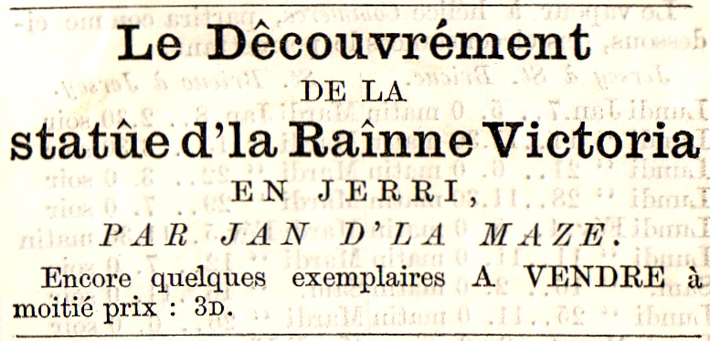

Le Découvrément de la Statûe d'la Raînne Victôria en Jêrri
LE DÊCOUVRÉMENT
DE LA
STATÛE D'LA RAÎNNE VICTÔRIA
EN JÊRRI.
SOUV'NIN DE 3 DE S'TEMBRE 1890.
Et l's'Avântuzes de Jan d'la Maze,
CAPTAINNE, ET
d'Janneton Lamiêtchi, sa famme,
CONTRE-MAÎTRE,
DANS LÛS YATTE
Et chein tchi vizent an ville chu jour-là.
Racôntè par li-maîmme - le Cap'tainne.
DISCOUR' D'VANT K'MENCHI.
J'adrèche mân p'tit livre à touôs les Mêssieux et à toutes les Dammes tch'ont tè la caoûse que j'iyon' unne tèlle belle Statûe d'notte bouanne Raînne, en Jêrri, et tchi nos ont bailli d'si supèrbes fêtes le jour du dêcouvrément, et à touôs mes concitoïens, pour tchi pièsse lûs être un
Souv'nin du 3 de S'tembre 1890.
Et à tous, j'lûs halle mân chapé.
JAN d'la MAZE.
Sainte-Catelinne,
Octembre 21 : 1890.
AVIS. - Unne janne pânfêque de nièche à nous, tch'a tè je n'sai combein d'annèes ès êcoles en France, et à tchi j'avais allouè d'liéze mes papièr' d'vant l'împrimage, m'a trouvè - l'affrôntèe! que l'ortègrafe et l'estîle de mân haoût français étaient pitrouoyablles et assoûmants. J'l'ai laîssie, (à forche d'torment), coume ou' dit, l'corrigi et l'amandé; ch'est pour-tchi, si n'est pon arrângi en papi-d'mûsique, ch'est à lli la biaoûme, pas à mé, si vos pllaît.
J. d'la M.
LE DÊCOUVRÉMENT
D'LA
STATÛE D'LA RAÎNNE VICTÔRIA, EN JÊRRI
SOUV'NIN DU 3 DE S'TEMBRE 1890.
LES PRÉPAZÂTÎS.
Si par chance où v'nèz janmais en pâlement, vous et ma bouanne-famme, Janneton Lamiêtchi, (car ch'est d'maîmme qu'oulle a nom), d'mandèz-li tchil âge qu'oulle a. Où n'vos rêpondra pas tout drait - oh nan; mais ou r'gardeza en haoût et pîs en bas un p'tit brin, coume s'oulle 'tait tout en pânsèes, et bétôt ou' vos bllînquesa dans l's'yièr, et vos d'mandeda, à vous, coume s'ou' n'savait pon, dans tchille annèe qu'nâtchit la Raînne Victôria. S'ou' lî dites que ch'tait en mille huit-chents dièz-neu', le vine-quatre de May, ou' vos diza qu'oulle l'criyait bein. Ou' n'vos z-en diza pas d'aoûtre; mais ou' s'touânnena sûs sân talon et vos laîrra là pitchîs à la r'gardé, la becque et l's'yièr' ouèrt', coume un crapaoûd au but d'unne frouque.
Ch'est-là sa manniéze de dize sen-âge!
J'vos dizai le s'grèt, mé : ou' m'a tréjous dit que llî et notre bouanne Raînne nâtchizent la maîmme annèe, l'maimme meîs, l'maîmme jour, et i' pazaît, à la maîmme heuze.
Aussin, toutes les feis tch'il y-a tchiques fêtes à l'houneu d'la Raînne, Janneton veint tout en guédon. Ou' m'dit qu'ou' n'sézait s'y k'mândé; car i' lî semblle que ches fêtes-là sont pour llî èttou. J'peux vos cèrtifié, dia! qu'la Raînne n'a pas unne sujètte pûs fidèle et pûs loïale que ma famme.
Ou' m'dizèz p't-être que ch'n'est pas êtounant. Eh bein, j'vos dizai èttou qu'n'ou n'peut pas empêchi les maoûvaises langues de pâlé.
Mais criy-ous pon qu'n'en v'là assèz sûs chu chapitre-là, et tch'il est temps de k'menchi? Oui! Eh bein -.
Un meîs d'vant l'jour célèbre du treis de S'tembre, j'mîmmes nos têtes ensemblle, mé et Janneton, et j'décidîmmes que j'îzîmmes veis les fêtes, et que che s'sait par mé qu'j'îzîmmes en ville; mais tchi fallait qu'notre ambèrcâtion - La Belle Bergère, fûsse bein nêtchèe et r'paîntuzèe partout, et qu'ou' r'eûsse un neu suit d'velles. - J'fûmmes unne raidde paûse d'vant qu'd'accordé : car mé, j'voulais unne couleu et ma famme en voulait unne aoûtre. J'voulais biu et ou' voulait rouoge. Ch'tait dôn hèrtchinne et hèrtchinne en av-ous en voul-ous, mais iun n'voulait pas moli pour l'aoûtre. Quand n'ou z'eu bein caquetè, n'ou z'en vînt lâssès à la fin, et j'tûmme notte goule, touos les daeûx à la feis.
Je m'mîns à suffllé “Mâlebro s'en va t-en djèrre,” et j'fîs la mînne de m'n'allé bûzotté d'l'aoûtre bor'. Janneton, l'mûsé gros coume le poin', s'n'allit boudé dans l'coin d'l'âtre, et m'app'lit bein chent feis : tête-de-mule, et qu'j'la vèrrais au chimmetchiéze d'vant long. - “Là, là,” j'lî dîs, “n'pâle pon d'maîmme, ma hardelle, d'itèt coume té, i' n'en tcheur pas mouozinne – eh! tu-es occouo forte et rêsolue; tch'est qu'tu nos brédouole-là, tu-es coume un capeste. Va, tu-îzas occouo veis les préchainnes fêtes, et mé èttou, j'espéze - nos daeûx ensemblle.”
Ou' n'boudi pas bein longtemps oprès chouna. Dans tchiques minutes, ou' s'butti sûs sé-z-èrgots, et s'en vint à mé couozant et m'dît : “Tu veur biu et mé j'voudrais rouoge. Eh bein, mân garçon, paîntuze le bate des daeûx couleur'. D'maîmme, je s'son' d'accor'.
Ou' savèz, j'fu si frappè de chein qu'ou' m'dîsait, que, véze, ma foué, j'vos la prîns souos les bras et vos y-en bailli jôe sûs jôe, qu'ou' fut oblligie dans un temps de m'dize qu'ou' n'en pouait pûs, et d'là mèttre bas.
“Tchi bouanne idèe,” j'lî fît, “il en s'sa aînchin, tu-as bein dit, ma vielle; j'savais bein, mé, que j'tchèrrîmmes d'accor' der'chèt. Et j'y mèttrai èttou unne rîle de biân entre l'biu et l'rouoge, et pîs je s'sa coume l's'anglliais dissent :
REDDE, OUAÎTE AINNE BLOÛE.
Quand la bouanne-famme ouït chouna ou' s'mînt à dansé d'fièrté; ou' m'happit par les daeûx z-ouozèlles - j'criyais qu'ou' me l's'êrrachechait, et pîs ou' m'embrachit à san tou'. Et ou' m'dît èttou : “Tu paîntuzezâs le d'dans couleu d'craimme, mân Jan - tu sai bein qu'j'aimme la craimme. Et pîs tu vèrras si tân trèze-pîds (il en a tout d'maîmme vînt-et-d'mi d'tchèlle), tu vèrras, véze, si tân trèize-pîds pazaîtra smairte : le d'dans couleu' d'craimme, et l'haoût rouoge, et l'fond biu, et unne rîle de biân entre les daeûx. Ah! mân Jan, tchil esprit qu'tu-as! Et pîs, je s'a mé tchi li-en f'sai un biaoû suit d'velles : i' s'sont coume de la nèt. Baîlle-mé des sou', mân garçon, et d'main sans manque, j'izai en ville acaté d'belle finne telle …
Le lond'main Janneton était l'vèe à sinne de jour et s'n'allit en ville acaté les matéziaoûx, tchi nos vîndrent le maîmme sé. Mé, je k'menchi entouôre le bachot. A m'suze que j'avânchais l'monde en' tait d'pûs en pûs êbahi, de veis coum-est qu'la “Belle Bergère” s'afignait touôs les jour'. - Janneton, d'sa cârre, chinait nièt et jeu à faize le neu suit pour la “Belle.”
Le prumi de S'tembre le bate était paîntuzè. Mes bouannes gens, i' r'lîzait - ch'tait coume un vrai mizaeûx! le fond biu-d'pruche, unne rîle de biân-d'pllon, le haoût rouoge-vèrmillion, et le d'dans couleu' d'craimme. Les velles, biânches coume unne grille, étaient bainnedèes; le mât, la baoûprèe, la boûme, la gaîffe, tout chouna avait tè bein grattè et huilè, et touôs les filains et l's'êcoutes, tout était neu.
Le jour d'oprès, tch'était l' 2, n'ou n'eut pas, coume ou' pouvèz l'pânsé, trop d'temps d'faize les draîns apprêts : i' fallait suffize à tout. J'sîs saeûx qu'Janneton allit d'la baraque au baté et du baté à la baraque pûs d'tchézanne feis dans sa journèe. N'ou mîns tchiques provîsions à bor', coume de raîson, pour en cas d'bésoin, un p'tit d'bouesson èttou, et iunne de mes câsses à naviguânt, attou châtchun not' fa d'hardes d'dans.
I' fut décidè qu'n'ou lev'zait l'ancre au p'tit sinne de jour.
Oprès qu'n'ou z-eut maoûlè unne bouochie, n'ou pâlit de s'nichit pour daeûx-treis heuzes, pour à sèlle-fin d'pouai s'rêvilletonné d'bouân p'tit partemps. Coume n'ou se l'vait pour grîmpé à la niche, i' nos semblli d'ouï tchiqu'uns calfêté à l'hûs de d'hor'. - Janneton s'n'allit tout-d'un-coup à la côniéze qu'si unne chouque et m'l'apporti, et m'dît : “Tchein', mân garçon, si ch'est tchique peûle tchi veint pour chèrchi nouaîse, assoume-lé, ne l'manque pas, baille-li-en pour ses chîn' sou', baille-li-en tchi s'en r'souveinge.”
J'n'ouvri pas l'hûs si vite; pas d'vant qu'd'avei criyè : “Tch'est qu'est là?”
Unne vouaîs que j'ne r'counu pon, rêpounit : “Iz ite hiére Caiptunne Djanne dé lé Mère livre?”
“Tch'est qui dit?” se m'fît Janneton, tchi n'sait pon unne pazole d'anglliais.
- “I' me d'mande si ch'est ichin que Cap'tainne Jan d'la Maze et sa famme demeuzent.”
- “D'mande-li,” se m'fît-alle, “tch'est qui lûs veur, et apprête ta chouque.”
Et l'travèr du creux d'la cllèt, d'unne bouanne grosse vouaîs, j'lî criyi : “Ouate fore dimaînde Caiptunne dé lé Mère, aîe? Ioú ouantce hime, aîe?”
L'aoûtre rêpounit : “Penne de dore, Caiptunne.”
- “I' t'appelle Cap'tainne,” s'fît ma famme, “ch'est un moussieu, ch'tî-là. Ouvre l'hûs, mân garçon; baille-mé la chouque, n'y-a pas d'dângi.”
J'ouvri l'hûs et il entri par dedans. I' n'tait pas tout seu' - il avait unne hardelle ov' li.
En entrant i' s'mînt à dize : Ioú nôze mi, Caiptunne.”
Ch'est vrai, j'les r'counu bein touos les daeûx : ch'tait un janne couple d'pales faches de villais, tchi v'naient d'se mazié, et tch'étaient v'nus à la Maze pâssé la lunne-de-mi, - lûs honi-moûne, coume i' dîzent en ville.
J'ézais tè bein arrangi si j'n'avais pon seu l'anglliais - mais d'bonheur que j'l'avais apprîns dans les frégades. Janneton, llî, tchi n'y comprennait goutte, nos r'gardait la goule êcalée coume un bîssa - oulle ézait tant voulu avei peut y fouôré sân mot èttou, mais nânnin, pas moïen.
Il' taient v'nus me d'mandé si j'côntion' allé veis les fêtes en ville le lond'main, et si j'îzîmmes par mé. Quand j'eu dit qu'oui, i' m'priyizent de les prendre ov' nous dans l'baté, et d'les pâssé jusqu'en ville.
J'n'en mentizai pon, je n'me souciais djéze d'itèts pâssagièr - mais la p'tite janne famme me r'gardait d'un si bouan' yi, et m'dît tant d'feis et d'unne vouaîs si douochètte :
“Diére Caiptunne saîe yesse!”
Que j'm'y-accordi à la fin. Ou' fît diâtrement bein de v'nin, dia; car, si s'n'houme était v'nu tout seu, i' n'en ézait janmais r'pazè. Mais tch'est qu'ou voulèz! unne belle janne drinètte a tréjous ieu l'aû-d'sûs d'mé - ch'est ma natuze. Et pîs, ch'est qu'chètte-là était janne, et pîs belle!
Eh bein, don, i' fut accordè tchi veindraient ov' nous. Quand j'eu ieu translatè à ma bouanne-famme tout ch'qu'avait tè dit, et tchi la priaient coume en grâce, lli, Janneton, de lûs pèrmèttre de v'nin dans not' yatte : “Ch'est un couple bein poli,” se m'fît-alle, “tchi veînt-ge - dit-lu tchi veînt-ge. (Ou' savèz, il' avaient dit pûs d'unne feis “Caiptunne” et “Maidumme,” et Janneton avait bein comprîns ches daeûx mots-là - chein tchi lî pllaîsait tèrribllement, à ma bouanne-famme; car ou' tcheint hardi à san ran. Ou' dit qu'la fammille des Lamiêtchèr' est tout aussi anciènne en Jêrri coume les d'Carterêts d'Saint-Ouain et les Lampriézes de Rozé. Ch'est llî tchi l'dit, - pour de mé j'n'en sai rein).
Un p'tit brin oprès, i' nos dîdrent: “Goude naïte, Caiptunne, goude naïte, Maidumme,” et nos châtchizent de main et s'n'allizent bein dêlièment s'couochi; car j'lûs avais dit: “Gô-qouique, mi câle ioû ètte fore tou-mârro mârlin'gue!”
Quand l'janne couple fut hor', ma famme me dît : “Allon' Jan, vite à la câniche; car d'main-à-matin, tu sai, i' s'sa jour à solèt l'vant!”
“Pardîngue,” j'lî rêpouni, “i' nos faoûdra être bein en route d'vant solèt l'vant.”
Là-d'sus j'nos z-n'allîmmes nos tâné.
Mais n'ou z-était autant gângni à se t'nin d'but; car n'ou z-avait la huètte à l'ânvèr' - pas moïen d'dormi. A 3 heuzes n'ou r'était sûs l'pont touôs les daeûx. Janneton s'mînt à allumé du feu pour bouolyi un goutin d'iaoû, à sèlle-fin qu'j'eûssion' châtchun unne bolèe d'bouân café d'vant nos ambèrtchi.
A 3 heuzes et d'mie n'ou n'viyait occouo lèrme; mais, j'dîs que j'm'en allais sièz l'vaîsin rêvilli l'janne couple et les ram'né ov' mé.
“Va-z-y vite et n'terge pas,” se m'fît-alle.
Diâtre-sait-mort, je n'criyais janmais d'les faize ouï. A la fin, ne v'là unne f'nêtre tchi s'ouvre, et tchiqu'un criyit : “Tch'est qu'est là?”
Je m'faîsais saeûx que ch'tait l'janne maziè, et sans y pânsé, j'rêpouni en anglliais : “Camme ânne, came ânne, eupe qouique, ioú ainne de micice; baïne-baïe fóre!”
“Bâle-mé m'n'arme, ma Râché,” dît l'cien tch'était à la f'nêtre, “ch'est un peúle de paitte d'anglliais tchi n'chèrche rein d'bon. Bâle-mé m'n'arme, que j'lî laîsse couôre un trait l'travèr de z-ouozèlles.” - En maîmme temps j'viyais unne ombre tchi lî tendait tchique chôse coume un long bâton.
Ah! j'pânsi en mé-maîmme, l'affaize caoûffe. Un instant oprès, chein tchi m'avait pazu un long bâton, mais tch'était l'arme d'chasse du vaîsin Phlippe, était mizè sûs mé, et unne vouaîs assèz êpaeûzèe criyit : “Bi âffe ioû tîfe, ore mi lèt gô.”
Ba! j'en avon' veu bein d'aoûtre dans les frégades – chonna n'nos faîsait pas grand' paeûx, et j'dîs bein trantchillement : “Sèrre te-n'arme, mân Phlippe; est-che que tu n'me r'counaîs pûs - tân vièr vaîsin. Erprend tes sens, valèt, et n'fait pon d'bêtizes; êcoute-mé.”
- “Tch'est chutte vouaîs-là,” se m'dît-i'. - Est-che té, vaîsin Jan?
- “Et tch-est qu'che s'sait si-en cas,” j'lî dîs. “Êcoute : n'av-ous pas un janne couple tchi d'meuze ov' vous?
- “Oui.
- “Eh bein, rêville-les tout-d'un-coup, dépêche-té, i' s'en veinnent ov' nous en ville, et i' n'y-a pas d'temps à pèrdre.”
- “Ch'est bon, j'comprends,” se m'dît Phlippe, et i' dispazut d'la f'nêtre.
Bétôt j'ouï unne capuchechie et unne calfêtetie d'diâtre dans la maîson, et des braîts : “Guette ope, quette ope, Mistré Fiche!” Mais Mistré Fiche ni Micice Fiche n'avaient pon l'air prêssis d'se l'vé. Anfin quand l'vaîsin eut bein camaîlli et bein heurlè, n'ou vit unne veûe r'jaîlli dans la chambre de Mistré et d'Micice Fiche.
A la fin, il' avaient pânsé tch'il 'tait temps d'môtré tch'il' avaient ouï. Mistré Fiche ouvrit sa f'nêtre et mînt la tête en d'hor'. I' n'd'vait pas y veis bein cllai; car i' se r'halli vite en d'dans, et j'l'ouï dize : “O dèrke ite îze, maï leuve!”
“Névre maïne,” s'lî fît sa leuve,” ouîe meuste gô, ioú nó, Fredde.” - Là-d'sûs la tête de Mistré Fiche se r'môtri d'hor' et i' criyi : “Iz ette ioû, Caiptunne de lé Mère?”
Quand i' s'fut assaeûzè que ch'tait Caiptunne dé lé Mère, i' m'dît qu'sa famme était dêjà pûs d'à la maîntchi habillie, et qu'li, i' y-était au bouân quar' - qu'dans treis minutes i' s'saient à bas. Et pîs i' me r'cllatchi la f'nêtre au nèz.
Mais diâtre, tout d'maîmme, i' n'y faîsait pas d'caoûd là d'hor' – j'ézais aimè biaoûcoup mûs être par-dedans à m'caoûfé; mais, ba! j'en avon' veu occouo bein d'aoûtre dans les frégades!
Le vaîsin Phlippe s'en' tait r-allè se r'tâné; car je n'le r'vi pon, ni li, ni sa bouanne-famme, ni s'n'arme.
Tchiques minutes oprès, Mistré Fiche et sa p'tite janne famme étaient à bas.
- “Aïe caînte sîe natin'que,” s'fît la pouôrre Micice Fiche.
Et en êffèt n'ou n'y viyait pas pûs qu'dans un fou' êtoupè, et la chiéze petite damme s'en vînt quâzi s'drotchi sûs mé. Si j'n'avais pas adounè à lî gaffé la taîlle, bein saeû qu'oulle ézait tchêi tout sân long dans l'bèl.
- “Téke maï érme, micice,” j'lî dîs.
Ou' n'se fît pas prié, ou' m'prîns l'bras bein dêlièment et m'l'êtraingnit bein du' èttou.
J' n'ézais pas voulu qu'Janneton l'ézait veûe, dia; car n'ou n'badinne pas ov' lli, j'vos l'promêts.
La pouôrre petite criatuze de Micice Fiche trembllait d'fraid et d'paeûx – n'ou viyait bein qu'ou' n'tait pa, habituèe à nos garamiézes, et Mistré Fiche, sé-n'houmes n'valait pas unne mie mûs.
J'les piloti tèllement qu'dans chîn minutes j'étion' dans la tchuîsinne de d'sièz nous, attabllès, mé, Janneton, Micice et Mistré Fiche, châtchun attou un bouân couêpé d'pain beûrrè et unne bolèe d'café bein bouillant.
Quand j'fûmmes finis d'beize et d'mangi, il 'tait temps de s'grée. Janneton mînt sân bannette, et mé, mân rouoge bounèt d'lainne. J'frummi tout bein clliotiche, j'mîns la cllèt dans ma paoûte et pîs marche au hâvre.
Le p'tit jour se faîsait – il 'tait quatre heuzes un quar'.
Ou' pouvèz pânsé que chutte feis je n'bailli pas l'bras à Micice Fiche...
V'nus au yatte n'ou s'ambèrtchi tous bein vite. Janneton s'mint lavant pour souogni d'la djibbe, mé à la bârre, et l'janne couplle s'assît dans l'mitan oprès l'mât.
- Unne belle petite brîse de tèrre, les velles trimèes, et nos v'là en route pour not' petit
VIAGE EN MÉ.
"Aoûe naïce, caiptunne," s'faîsait Micice Fiche. J'pânsi daeûsse-treis feis: je n'sai' s'tu dizâs aoûe naïce tréjous - j'vèrron' bétôt.
J'sortîmmes de charme d'la baie, par un p'tit vent arriéze; n'ou doubllit la pointe de l'Artchézondé, et n'ou pâssi d'vant Aoûne-Port sans avâzies. Dans unne heuze j'étion' endrait l'Vièr-Châté, Et tchi belle veûe, mes chiézes gens! il 'tait tout êluminé par le solèt l'vant. Janmais d'votte vie n'avèz veu rein d'pûs bé! Janneton, tch'a veu chonna des feis sans nombre, n'y prennait pas d'avis; mais nos daeûx pâssagier' ne s'en cônt'naiont pas d'jouaîe. La p'tite janne famme, partitchuliézement, tapait dans ses p'tites pattes en as-tu en veur-tu, et criyait toutes les minutes:
"Louque, Fredde, aoûe pretti; louque, louque!"
En êffet, ch'tait supèrbement bé.
Pâssè l'Châté, i' k'menchi a y-avei un ptit d'cllapotée. I' nos faillit prendre un rîs dans la grand' velle, et couôrre en d'hor', et lovié - le vent avait un miot changi.
Je r'mèrtchi bétôt qu'nos pâssagier' étaient toués les daeûx trantchilles. Micice Fiche n'avait pon grosse mînne, vraînment. Ou'm'avait l'air bein jaoûne. Oul' avait la tête app'yè sûs l'êpaûle à sân Fredde, tchi n'avait pon n'tou l'air bein dîguânt. La brîse s'accrut un p'tit, à m'suz que j'prenion' l'large - la Belle Bèrgère filait et saoûticotait d'pllaîsi - ch'tait coume unne héronde!
J'avais l's'yièr' sûs Micice Fiche, tchi m'pazaîssait touânné sûs l'vèrt. Janneton n'viyait rein - oul' tait otchupèe lavant à souogni l's'êcoutes.
Tout d'un coup la pouôrre petite Micice Fiche fut prinse du hitchèt et à sué à d'goûts.
J'creu tch'il tait temps, et j'criyi: "Janneton, ma garce, ergarde, j't'en prie, ramâsse dôn la toube, et vain-t'en vite veis entouôre Micice Fiche." Ma famme comprînt bain; ou' s'en vînt vite atou la toube à assisté la pouôrre petite janne famme tch'était, en êffèt, bain malade: le tcheu lî cratchait coume un tas d'cannibottes, et pîs...
J'dîs à s'n'houme d'allé prendre la pièche à Janneton quândi qu'ou' prendrait la sienne. Le pouôrre pend'loque en s'n'allant s'êtravelit je n'sai combein d'feis à quatre pattes dans l'fond du baté. II avait bein d'la painne à se r'mâté touôs les coups qui tchiyait.
La pouôrre petite Micice Fiche en avait-alle dans l'estouma! - Dans un temps ou' s'trouvit si malade qu'ou' s'mînt à miaoûné coume unne êfant. Mais oprès tout, che n'tait djéze qu'unne êfant, unne toute janne garce, tch'ézait deu être occouo à l'êcole, à la pièche d'être embâtée d'un houme.
Mais à-ch't'heu i' n'y-a pûs d'avèr!
La préchainne chôse, ou' s'mînt à criyé des cris piteur': "Mémèe, aï ouantce tou gô tou maï mémèe! Fredde, têke mi tou maï mémèe!"
Quand j'la ouï, j'pânsi: n'ou n'peut pas alloué d'itèt gnolin à bor', i' faoût r'vizé et faize un p'tit miot d'combat.
J'mîns la bârre dessous et j'm'êcriyi "Louque aoûte, ioû faredde! Lèt gô de djibbe-shîte, lèt gô de djibbe-shîte."
Mistré Fiche se r'touânnit à me r'gardé coume un innocent - i' n comprennait pas unne mie.
- "Lèt gô de djibbe-shîte, lèt gô de frannete sêle rôpe, tchan d'annima!"—Chutte feis ichin i' comprînt et lâtchi l'êcoute, et je r'vizion d'charme.
Quand l'baté fut pas bouannement rabattu, j'criyi: "Drâ de djibbe-shîte tâte, Mistré Fiche."
Sav-ous tch'est que ch't'ouêzé-là allait faize? I' s'mînt à hallé sûs l'êcoute au vent; dans un cllin-d'yi l'baté arrive, et s'en' va erprendre l'vent d'l'aoûtre bor' - un pouce de pûs et j'ézîmmes tè tous caipsaïzès! J'tais-ti mârri! J'lî baîlli ‘un p'tit miot d'mân' bréviaize, à Mistré Fiche; j'lî dis: "Lèt gô, ioû foûle, lèt gô, t'chan d'annima, lèt gô. Ioû lainnede-sheurke, di odeur, poule di odeur, poule di odeur djibbe-shîte!
"For shême, ôlde mainne," se m'fît Micice Fiche, "ouate fore saie shîte sô motche é-bôrde é bôte?"
Je n'tais pûs Caip'tunne, ou' viyîz bein. Dans ma coléze, j'sai bein qu'j'lî rêpouni' rupêment: "Maïne yeûre siquenesse, mèdemme; maïne yeurselfe." Ou' s'teut et ne r'dît pûs mot.
Il en' tait temps èttou; car l'êffort qu'oul' avait fait pour me pâlé si bein, lî r'baîllit l'hitchèt; et lî-en fît dêgôrré du stoffe - i'y-en eut unne fèrre toubèe chu coup-là.
Ma famme, tchi faîsait d'hôriblles grimaches et teurtait l'néz assèz à se l'dêtilbouêtchi, envyit bein vite la toubêe hor' bor'. J'la ouï dize "Tch'est don qu'ou peut avei mângi, chutte famme pour qu'il infecte tant!"
Mistré Fiche était accllutchi dans le d'vant et ne s'gênait pas fort de sa micice. Le pouôre cor était èttou bein vèrt.
Quand j'ûmmes couozu notte bordèe, i' nos falli r'vizé occouo : j'tîmmes en d'hor' de la pointe de la Rocque.
J'criyi : “Erre ioû slîpinne, Mistré Fiche? Aïe, faredde!” - Mistré Fiche se butti. - “Lèt gô de djibbe-shîte, lèt gô,” j'lî dîs. - Chutte feis ichin i' m'comprîns bein assèz - l'affaize n'allit pas mal. I' n'fît pas la bêtîse de l'aoûtre feis; mais i' halli et amazi la raïte êcoute, et je r'vizîmmes. Daeûx bordèes d'pûs nos z-amenizent en d'hor' de la Colètte.
Micice Fiche k'menchi à r'prendre ses sens et à s'r'êmôtchi. Janneton la couochi dans l'fond du baté et s'en fut lavant.
I' nos z-avaient apèrchûs de d'sûs l'Mont - un yatte était signalè - je l'dîs à Janneton. J'dêhali sqouotrement de d'dans l'laqueur', notte couleur'. Ch'e n'tait iunne toute neuve que j'avais ieu d'faitte en ville sans en pâlé à la bouanne-famme; car j'voulais lî joué un p'tit tou'. J'lî criyit de v'nin t'nin bon la bârre quândi que j'vizezais la couleur' - chein qu'ou' fît. Ch'e n'tait unne belle, ma fé! à treis cârres, de daeûx vèrgues d'long, biânche, bordèe d'biu, et l'nom en belles rouoges lèttres :
“LA BELLE JANNETON.”
Nan! che n'tait pûs la Belle Bergère. J'avais r'noumè mân yatte “La Belle Janneton,” pour faize honneu' à notre bouanne Raînne et à ma bouanne-famme. J'dîs à Janneton de r'gardé. Mes p'tites gens! quand oul' eut peut dêchiffré les lèttres, et qu'ou' vit que ch'tait sân nom, ou' s'mînt à rize coume unne folle - 'tait-alle fiéze! “Tu n'y perdras rein,” ou' m'dît, se m'dît-alle, “tu n'y perdras rein, mân Jan, tu peux compté d'sûs. Tu m'fais grand pllaîsi, j't'en r'faizai un aoûtre - ch'n'est pas pèrdu!”
Anfin, je r'vizîmmes pour la drainne feis. Micice Fiche rônfllait dans l'fond du baté et s'n'houme en faîsait autant lavant.
Janneton lâtchi l'êcoute de la djibbe, tchi s'mînt à cllapotté dans l'vent, justement coume Mistré Fiche se r'êmotchait tout en paeûx en houâlant : “Ouére îze ette aïe aimme? natte ine maï bedde shôrelé," et en maîmme temps, coume i' s'buttait et s'frottait l's'yièr, la djibbe lî dêsatchait un' tè coup dans la goule qu'ou' l'fichit en travèr sûs la rêle du baté, et l'anvyit en balanche la huètte en d'hor. Janneton, tch'est si manigatte pourtant, n'eut que l'temps de l'happé par un djézèt. Mais che n'fut qu'pour un instant – la pouôre garce fut bein oblligie de l'laîssi couôre, et v'là Mistré Fiche à l'aioû. D'bonheur pour li que l'baté n'avait pon occouo r'prîns s'n'ièrre et que j'pu tout-d'un-coup loffé un miot, ch'tchi fît que Mistré Fiche s'en vînt l'long du bor'. Quand i' fut l'long du quartchi j'allouogni la patte et l'gaffi par les cringnes. Il en 'tait temps, dia! si j'l'avais mântchi chutte feis-là, ch'tait fini que d'li, j'n'ézais jammais peut le r'pêtchi.
Touos l's'hôlâs et tout l'tîntamârre que n'ou fît rêvillizent Micice Fiche : quand ou' vit s'n'houme dans un tèl êtat, et qu'ou' s'apèrcheu qui v'nait d'être quâsi nyè, ou' s'mînt à braize et à ouîmpé d'unne divèrse sorte, et pîs pour en fini, ou' s'mînt à faize des braîts si hôriblles que, véze, j'en juze et pon n'en mêns, tout en trembllait souos nos pîds, et oprès chonna, ne tchi-t-alle pas èttou en stériques!
J'fûmmes oblligîs d'mèttre en travèr' pour souogni nos malades. Janneton, tchi n's'êfrite pon pour un rein, m'dît : “N'ai pas d'paeûx, ou' n'est qu'f'lèe, j'm'en vais bétôt la faize ervenin.” Et dans un cllin-d'yi, Janneton puche unne toubèe d'saoûce et la fouôtte à raide-brache dans la fache à Micice Fiche : ou' r'ouvrit bein vite le z-yièr', et d'mândit pour sân dière Fredde. Oulle avait la veûe boustrement êdjézèe, ou' faîsait quâzi paeûx.
Pour la r'cônsolé, j'lî dis : “Nô èrme done, mèdemme, kaitch't é faïne fiche fore ioû - dère î îze.” – Mais la p'tite hardelle n'était pas fiéze à mé, je l'vit bein. Je n'li-ézais p't-être pas pâlé d'maîmme, s'ou' n'm'avait pon insultè – je n'l'avais pardîngue pas occouo oublliè. Sân Fredde était là à maîntchi êbaoûbi. Janneton, tchi se r'counaît à tout, lî fouôrri sân poin' dans la goule, et l'fit ergoli un tas d'saoûce tch'il avait avalè, et pîs ou' lûs baîlli à touos les daeûx un p'tit goutin d'iaoû-d'vie. Dans p'tit d'temps i' r'étaient touôs gaillar'. La seule mînzéze 'tait que l'pouôre laiduze d'gouttait coume un paîsson et qu'Micice Fiche en 'tait d'maîmme à pé-près, par l'iaoû qu'Janneton li-avait envyè sûs l'co – aoûtrement i' n'y pazaîssait pas. Et pîs, i' ne g'lait pas, et dans demi-heuze, s'tout allait bein, n'ou s'sait à tèrre.
Je r'mîmmes en route quand tout fut nêtchè et r'pazè. Dans trente-chîn minutes j'étion' dans les têtes des caoûchies d'la ville, tch'étaient couèrtes d'monde, tchi nos r'chuzent attou des chents hourâs, et des cris de : Bravo, “La Belle Janneton!”
Je n'fûmmes pas longtemps d'vant qu'd'être le long du slippe de la neuve caoûchie du Nor'. Nos daeûx pâssagièr, unne feis dêbèrtchîs, oublliizent de nos dize sélement bon-jour et mèrcie! I' saoûtizent bein dêlièment dans unne vétuze et s'n'allizent coume daeûx tchans fouôttès. Chôse saeûze tch'il' avaient honte de s'veîs d'vant tant d'monde, et trempès coume des cannar'. – Quand j'les vit s'n'allé d'maîmme, j'lûs criyit : “Gô tou bedde, maï dièrzes – dètce de plêce fore ioû! mais je n'crai pas qui m'ouizent.
Ch'est aînchin tchi finizent lûs lunne-de-mi.
I' fallait à-ch't'heu mèttre “La Belle Janneton” en saeûzetè. J'décidîmmes d'la fouôrré à l'abri dans l'Coin-ès-Rats. V'nus l'long du tchai, n'ou d'cendit la couleur et n'ou z-am'nit les velles. J'dêbèrtchîmmes la câsse, et pîs j'saoûtîmmes à tèrre. Le baté unne feis bein amazè, j'm'en allais hélé tchiqu'uns pour tchi portîssent notte câsse; mais ma famme me fît bein laid et n'voulit pon. “Est-che qu'ou' z-êtes trop moussieu, si-en cas, pour être veu porté unne câsse d'un but ov' voute famme de l'aoûtre? Je n'me compte pas trop damme, mé.” – Tch'est qu'n'ou pouait rêpondre à chonna, m'diz-ous? “Eh bein, allon,” j'dîs, et en che dîsant, j'empouogne la hangne de deître et Janneton à sénêtre et nos v'là en k'min pour la porté à la chambre que j'avais ieu soin de r'tenin et d'paiyi d'avânche, un meîs d'vant, à l'hôtèlle de
LA LUNNE TCHI S'LÈVE.
Mais boustre-de-mé, i' y-avait occouo un bouân but à grapiné, et la fichue câsse était occouo p'sante : j'en d'puzais d'sueu, tchi m'boulait coume des peis avaoût l'mûzé. Janneton – janmais n'en ai veu unne pazèlle pour être à chézin – ne pazaîssait pon lâssèe en tout. Toutes les feis que j'lî dîsais : “mèt bas!” – pour r-avei mân vent, ou' me r'gardait en grignant, et s'fichait d'mé, et m'dîsait : “Tch'est qui m'a dôn baîlli un' tè mâle? v'là tchi n'a pas pûs d'nèr qu'un bibèt.” Eh bein, je m'mârri d'la ouï tréjous m'clluté chonna au nèz – car oprès tout, n'ou s'ênnyie d'gôncé du shucre, et j'lî rêponnit bein sèquement : “Eh, Micice Janneton L'Amièrti, ch'est vous qui l'avèz happè, le chein qu'ou' z'app'lèz tréjous un mâle, pèrsonne ne vos l'ont pas baîlli.” – V'là tchi la fît taize sa varvètte au meins un p'tit brin, et n'ou' z-eu un p'tit miot de r'pos.
Anfin, j'arrivîmmes dans la rue et d'vant l'hôtèlle.
“Là!” j'dîs à ma famme, “ch'est ichin! nos y v'là!”
Ou s'mînt bein vite à r'gardé à l'entou d'lli, et pîs ou' s'apitchi. Dans un cllin-d'yi ou' laisse couôre la hangne et la câsse tchaît sûs sân but de tout sân peîds – j'pensais, chutte bouanne feis-là, que l'bitche de baheur était assembllè.
“Est-tu prînse piéze? affolle-tu?” j'lî dîs, quand j'la vit s'apitchi dans l'mitan d'la rue, les daeûx pattes sûs les daeûx hânques; mais ou' m'lânchit un' tè r'gar' qu'j'en resti là, drèt coume un' êtampèrche sans bouogi un fi : je n'pânsi sèlement pon à mèttre mân but bas. Ou' r'gardi et bllîntchit, et bllîntchit et bein r'gardè, i'y-en eut du tîntamârre. Mes bouannes gens! en est-che la iunne, quand i' y-a la moindre chôse qui la crouêse! Ou' me d'mândit prumiézement d'sa belle petite vouaîs, et d'sân biaoû p'tit ton, tchi m'fait tréjous creize tchi'i' y-a mille frumîns tchi m'grîmpe amont la hézèque du dos : “Est-che là la baraque, Jan d'la Maze?”
J'dîs qu'oui.
- “Ch'est là l'hôtèlle où-est qu'ou' z-avèz ertînt unne chambre pour un jour et unne nièt, et qu'ou' z-avèz paiyi d'avânche?”
- “Mais oui, ma Janneton.”
- “Et ou' n'rouogissîz pon d'honte d'avei am'nè voute famme à chu creux-là? Criy-ous, peûle qu'ou z-êtes, que j'm'en vais m'coulé là-d'dans?”
- “Quément,” j'lî rêpouni, “tch'est qu'tu-y trouve?” ch'est unne fanmaeûse belle pièche pûs-z-à-co, pour unne hôtèlle, i' m'semblle. Tu n'vei dôn pas coum-est qu'oulle est bein paîntuzèe en rouoge-cllai? – tu sai bein, la couleur que tu-aimme tant. Et tu n'vei dôn pas èttou ch't'êmitâtion des nouages en biaoû biu dèrke, et pîs la belle Lunnet chi s'lève à l'aurîzon? Ah, ma fille, ch'est pour rize que tu m'pâle aînchin. Est-che pas qu'ch'est occouo iunne de tes p'tites rîselèes?”
- Quand j'l'ì-eu dit chonna ou' se r'dêtouânnit bein vite de mân bor', la fache toute êpannie.
- “Est-che que ch'est bein chutte belle maîson-là paîntuzèe en rouoge?” se m'dît-alle.
“Eh, mais oui!”
- “Ah, à la bouanne-heuze, j'criyais que ch'tait chètte-là tch'est couleu d'fumèe.”
- “Eh bein, tchi occouo,” j'lî dîs tout êbahi, “chètte-là à côtè? Eh, ch'est un creux à ramounaeûx. Tu n'vei dôn pas les brînges et touos l's-ôtis à ramouné, et toutes les pouques à sie? Coum-est qu'tu v'nais à faize unne tèlle bêtise, me dizâs-tu, de prendre unne boutique à ramounaeûx pour unne hôtèlle?”
La seule rêponse que j'eu, fut : “taîz-ous, Jan d'la Maze, - ou'n'en avèz p't-être janmais fait, vous, d'bêtises dans vote vie.”
Je m'mîns à bouffé; mais l'diâtre-sait-mort, mân ji faîllit bein touânné en rtchinne-ca; car Janneton s'afètchi tout d'un coup, et m'dît : “De tch'est qu'ou vos jâsèz, Jan d'la Maze? Est-che de voute famme, par chance? J'espéze que nânnin, ou bein …
Ou pouvèz bein compté que je n'grigni pas longtemps. Ma fingre, nan, j'eu bétôt unne fache longue coume le bras.
- “Allon', i' faoût entré par dedans,” se m'dît-alle, “n'ou n'peut pas resté ichin pitchîs coume daeûx buts-d'bouaîs. Est-che qu'ou' n'avèz pon d'honte?”
Ou' r'prîns la hangne, et j'entrîmmes tout drèit dans l'allèe d'l'hôtèlle de La Lunne tchi s'lève. J'mîmmes la câsse bas, et j'dîs à un avé d'l'hôtèlle tch'était là à nos bllîntchit affrontêment d'allé crié à sân maître - que j'voulais lî pâlé.
“Bien, monsieur,” se m'fît-i', et i' s'n'allit couozant.
Quand Janneton l'ouït m'pâlé en haoût français, oulle en fut toute rêjouie, et ou' me d'mandit si pâlaient touôs français dans la maîson.
“Eh fistre, j'cré bein qu'oui qu'i' l'pâlent,” j'lî rêpounit, “et n'ou' n'y-entend pas aoûte-chôse avaoût l'but des jour'. J'l'ai chouaîsie tout exprès pour té, ma Janneton, viyant qu'tu n'sai pon l'anglliais.”
“Nan dia, je n'sai pon d'anglliaîchin,” se m'fît-alle, “et je n'veur pon en apprendre n'tou : je m'contente de not' biaoû jèrgon, mé - j'n'en ai pon d'honte. J'ouai bein l'haoût français, et j'pâle le jêrriais coume i' faoût, i' n'm'en faoût pon d'aoûtres. Pour té, mân Jan, ch'est diffézent, tu l'sai pour nos daeûx - l'anglliais; mais aussin, tu-as tè si longtemps dans les frégades.
- “Oui, ma fille,” j'lî r'pllitchie, “huit ans-et-d'mi et neu jour', pas unne heuze de meins.”
J'li-ézais p't-être bein raconté tchiques sçaînnes de la djèrre de Sébastopole; mais sûs l's'entre-faites, le maître d'l'hôtèlle - un p'tit hèrlitchin sèt et biân coume de la caoûx, fit s'n'appazition.
“Ah, c'est vous, Monsieur. – Madame, je suppose;” se m'dît-i' en faîsant un ênorme salut.
- “Véze,” j'lî dîs, “ch'est là ma bouanne-famme (Janneton fît la révérence).
“Vraiment, monsieur,” se fît-i' occouo, “je n'savais pas si madame n'était pas la demoiselle de monsieur plutôt que sa dame.
Quand Janneton l'ouï, oulle en rouogit d'fièrté : pânsèz don, de pouvait être prînse pour ma fille, fallait-i' qu'oulle eûssent la mînne janne, hein? – Saquetis Normâns, i' sont touôs d'unne sorte, menteur' et fllatteur' coume des djâblles. Je n'tait pas fi, mé, d'ouï d'itèt; assèz pour me gâté l'caractéze de ma famme. Aussin, che n'tait pas d'unne vouaîs trop douoche que j'lî dîs d'nos faize monté la câsse à haoût, et d'nos môtré la chambre qu'j'avais louè et r'tînse pour le 3 et 1'4 de S'tembre.
“Je me rappelle fort bein, monsieur,” se m'dît i', “que vous êtes venu louer une chambre ici, il y a quelques semaines; mais j'oublie le numéro.”
“L'numézo 21,” j'lî dîs.
Mais quand i' ouï que ch'tait chutte chambre-là, s'ou l'avêtes veu : i' d'vînt tout trembllant et touânnit occouo pûs biân.
“Tch'est dôn qu'ou' z-avèz, moussieu,” s'lî fît ma famme, toute êpaeûzèe, “est-ous malade?”
Le p'tit bouan-houme nos z-assaeûzit tch'il 'tait tout-à-fait bein. Mais nos dît-i' : “Figurez-vous, monsieur, madame, que deux messieurs ont loué le numéro 21, il y a une semaine pour jusqu'à hier, alors qu'ils devaient partir; mais lorsque hier soir je leur ai dit qu'ils ne pouvaient l'occuper plus longtemps – qu'elle était louée pour aujourd'hui et demain, ils m'ont répondu qu'ils y resteraient, et qu'ils n'en sortiraient qu'après demain. Vous attendant, je suis encore monté tout-à-l'heure; mais ils refusent toujours de s'en aller. Ils m'ont même menacé de me faire descendre l'escalier quatre à quatre si je leur disais un mot de plus : vraîment ils me font peur.”
- “Nos v'là dans un biaoû piclle. Tch'est que j'nos z'n'allon' faize à-ch't'heu?” je m'mîns à dize.
Ou' n'me rêpounit pas; mais en se r'touânnant du bor' du p'tit hèrlitchin, ou' lî dît : “I' vos font paeûx, est-i' vrai?”
- “Ah mais oui, ma bonne dame,” s'lî fît l'aoûtre, ils me font bien peur, allez. Et il y a de quoi, je vous assure. Irai-je chercher la police, croyez-vous?”
“Là, là, i' n'en est pas besoin,” rêpounit Janneton, “j'nos z-n'allon' veis.” Et pîs à mé : “Jan d'la Maze, veur-tu m'obéi unne feis en ta vie?”
- “Ch'est s'lon,” Jan d'la Maze rêpounit.
- “Te sens-tu assèz d'couozage dans l'cor' pour v'nin m'aîdji à cllairgi notte chambre de ches daeûx peûles-là, tchi font tant d'paeûx à chu pouore et tu vèrras.”
Prumiézement ou' fît porté la câsse à haoût par daeûx garçons d'la maîson, et lûs dît d'la mèttre oprès d'la porte du numézo 21. Quand i' fuzent erdévalès, ou' m'dît : “Veint-en!”
Ou' montit les d'grès - j'la siêzi.
Le p'tit hèrlitchin restit à bas pour êcouté.
Quand j'fûmmes v'nus endrait l'numézo 21, j'dîs : “ch'est ichin.”
N'ou ouiyait tchiqu'un foussenotté dans l'appartènement.
- “Tape,” me fîs Janneton. Et j'tapi treis bouâns coups. - J'ouï unne vouaîs tchi dîsait :
- “Encore ce maudit propriétaire qui vient nous déranger. Nous allons cette fois le recevoir de la bonne façon.”
Dans l'moment la porte fut ouèrte toute large. Mais quand l'chein tchi l'avait ouèrte - un grand haoût, mînce et sèt coume unne cannibotte, - nos vit touos les daeûx, i' nos d'mândit assèz affrontêment tch'est que j'voulîmmes.
- “J'voulon' noute chambre,” lî rêpounit Janneton, “j'l'avon' paiyie d'avânche pour annièt et d'main; ch'est pourtchi baîllie-la-nous tout d'un coup.”
Un aoûtre individu - un gros cour', coume un bouân boucaoûd - s'mînt à s'motchi d'nous. I' nos dît jusqu'à tchi n'sortizaient pas pour nous. “Non, Mère Chambrette,” s'fît-i' à ma bouanne-famme, “nous ne sortirons ni pour vous ni pour votre bonhomme.”
Ou' savèz, ch'e n'tait trop, et i' fallait oprès chonna en v'nin à un but. Janneton vînt rouoge comme unne êcarlate. Ou' m'fît un cllin, et dans un saoût oul' tait dans la chambre, et volit sûs la fripesie du chein tchi v'nait d'l'insulté si grôssiézement.
- “Souogne de la ravaoûle,” se m'dît-alle, “je m'grêzai bein du boucaoûd.” Et pîs, mes bouâns z-anmîns, ou' vos le t'nait par les cringnes - et il en avait unne touaîson - et vos lî châtchait la bédainne en as-tu en veur-tu, quândi qu'mé, j'laîssais couôre un biaû coup-d'poin' dans l'fllân d'la ravaoûle, tchi s'en alli s'êtrueûlé par sûs la câsse tch'était sûs l'haoût du d'grè, en heurlant que j'v'nais de l'tué. Janneton faîsait èttou d'sân mûs; car le boucaoûd soufllait coume un pourpaîs, et lî criyait d'lâtchi ses cringnes. Anfin, oprès qu'ou' ieu êrachi unne bouanne pouognie d'sa pèrruque, et qu'il eut promîns de s'n'allé et d'n'ervenin pon, oul' l'laîssit couôre. Quand i' fut libre et tchi vit sân parchonnyi êtravelè sûs l'haoût du d'grè, i' pèrdit couozage, i' fallait bein; car quand il eut fait daeûsse-treis teurbleudes, il aîdjit à l'aoûtre à se r'mâté sûs sé-z'èrgots. I' nos môtrizent lûs poin', et en s'n'allant i' dîdrent tchi s'n'allaient lûs pllaindre “a monsieur l'Maire.”
“Allèz vos pllaîndre à madamme le Péze, s'ou voulèz, j'lûs dîs.”
Et i' s'n'allizent lûs trébutchant avaoût l'êcalyi.
Chutte feis-là la chambre était bein à nous.
Janneton allit examiné partout, et pîs je d'cendîmmes pour mangi unne petite bouochie d'vant nos changi. Quand j'fûmmes à bas, le maître s'en vînt tout joyaeûx nos r'mèrcié d'l'avei dêbarrassè des daeûx individus tchi lî faîsaient tant d'paeûx.
Mais Janneton lî dît qu'la chambre avait besoin d'être approprièe, car qu'oul' tait coume unne cotte à couochons. Il envyit bein vite tchiqu'un la nêtchyé, quândi qu'j'étion' à nos r'baîlli des forches.
- “Monsieur, madame,” nos dît-i', “vous m'avez fait un tel plaisir que je ne saurais jamais m'acquitter envers vous.”
- “Ch'est bon, moussieu,” lî rêpounit Janneton, “v'là tchi n'vaoût pas la painne de nos r'mèrcié. Quand ou' z-ézèz d'itès îndividus sièz vous, v'nèz nos l'dize.”
J'nos solîmmes pas mal de pain et d'boeu, et d'bouân cidre. Tôt oprès n'ou' vînt nos dize qu'la chambre était prête, et j'amontîmmes à nos changi. – J'trouvîmmes la câsse dans la chambre tch'avait tè bein r'pazèe et êpoussetèe.
I' fallait s'dêpêchi; car r'gardant à ma montre j'vit tch'il tait déjà 10 heuzes pâssèes, et j'voulion' allé dans l'Vièr-Marchi pour veis la procêssion. Je m'mîns dans unne cârre et Janneton d'vant l'mizaeûx, et pîs dêcrache et dêcrache et bouffe …
Janneton avait apportè sa belle robe de vèrte souaîe, et sân bannette à piummes de co, et sân spainneceur, coume ou' l'appelle. Mé, j'avais m'n'uniforme : ma câsaque de biaoû biu dra à jaoûnes boutons, et ma castchètte à galon dorè et pîs ma médalle, si vos pllaît.
Quand j'fut prêt, et qu'j'eu djêpè unne volèe pour ma famme, qu'oul' eusse mîns toutes sé-z-attouèttes, et sân tunot' qu'ou' n'pouait r'pazé d'pièchi carrêment à sân goût, j'sortîmmes. J'emportîmmes la cllè, d'crainte des filous, et je d'cendîmmes à bas. Dans l'allèe j'rencontrîmmes le p'tit maître d'l'hôtèlle. I' nos r'gardit tout êbahi et d'un air tout êfritè : i' nos z-ézait, ma fîngre, pas r'connus si j'n'avion' pas pâlè.
“Comment, monsieur, madame, est-ce bien vous que je vois devant mes yeux? En vérité, j'ai eu d'la peine à vous reconnaître.” V'là chein tchi nos dît, et je n'crei pas, chutte feîs, tchi mentait.
J'nos décidîmmes à allé par le Gardin du Ouêde-Brige en nos z'n'allant pour le Vièr-Marchi. Janneton me t'nait l'hèrchot.
Que ch'tait bein arrângi! Il' avaient bâti unne supèrbe belle maîson à quatre pignons en d'sûs d'la Statûe d'la Raînne, et partout en d'sûs i' y-avait d'la vèrduze, et sûs les quatre bor' i' y-avait d'belles lèttres et des chiffres. Et pîs unne belle estrade couèrte d'rouoge dra, et un tas d'tchêzes et d'bans dans l'gardin tout à l'entou pour les gens d'qualitè à s'assiéze. Mais quand Janneton vit la Statûe amfllubèe d'un lîncheu, ou' n'pouait pas en r'venin.
- "Est-che qui s'en vont la gardé couèrte tréjous d'maîmme," se m'dît-alle toute mârrie.
- "Eh mais, nânnin," j'rêpouni, "tu vèrras bétôt un p'tit. Mais, coume tu sai' bein, ou' n'tait pas occouoze habituèe au cllimat d'Jêrri, i' l'ont couèrte daeûsse-treis jour' pour la roûzèe. I' la dêcouvrizont bétôt, quand l'solèt s'sa v'nu à sa haoûteu'."
D'lâ j'filîmmes du côtè du Vièr-Marchi, n'ou z-y-arrivit il 'tait onze heuzes sonnèes à l'haoûlouoge de la Vielle-Egllîse. La pièche était dêjà pllainne coume un' oeu. J'poussîmmes et crépoussîmmes si bein que jé n'fûmmes pas longtemps d'vant qu'd'nos trouvé drèit en d'vant, et j'nos apitchîmmes bein solidement pour veis le k'menchement d'la fête, la prumié' partie d'
LA MATINÈE.
I' y-avait des soudar' mâtès chin'-et-là des daeûx bor', dépis la Cour jusqu'au Ouêde-Brige, pour gardé la route clliaize pour la procêssion. Et pîs tchiques temps d'vant l'heuze, treis g'valièr' pâssizent devant la cour pour allé tout lavant, et pîs d'biaoûx officier' à ch'va vîndrent s'rangi daeûx à daeûx tout en d'vant d'la Cour. Janneton me d'mândit si j'les counaîssais. - “Pas tous,” j'lî dîs; “mais j'en r'counais bein tchiques-uns.” - Vei-tu bein chu biaoû janne-houme-là gîndè sûs l'biaoû nièr cheva tchi r'lîze coume unne huile? ch'est iun des mêssieux d'la Banque, à la cârre de la Grand'-Rue; ch't-aoûtre-là, tu dei' bein l'counaître - ch'est Moussieu d'Aoûneville, et l'chein d'par ichin à côtè d'li, ch'est Moussieu d'la Hague; là, par ichin - le chein tchi-a ches biaoûx jaoûnes galons sûs sa rouoge câsaque, et sân trie-cârneur' sûs la tête.”
- “Et ch'tî-là attou un grand nièr bounèt à pé?” se m'fît Janneton.
- “Je n'le counais pas,” j'lî dîs, “je n'cré pas qu'j'en s'sai iun d'par ilo, ou bein il ézait èttou un trie-cârneur' et des piummes, ou bein unne castchètte à pitchèt sûs l'haoût.
Au but d'unne bouanne petite volèe, les g'valièr' k'menchizent à bouogi et à avânchi : un biaoû, anciain offici, à la mînne d'jèrri, sorti d'la Cour, et monti à ch'va.
- “Eh, mon doue, tch'est chu bel offici-là, tchi veint d'monté à ch'va? s'êcriyit Janneton.
- “Ch'tî-là tchi veint d'monté à ch'va, et tchi-a d'si belles piummes sûs sân trie-cârneur'? Janneton, ch'est là l'général!”
Dans daeûsse-treis minutes n'ou vit un rêmouage – un tâs d'mêssieux sortizent de la Cour – ch'tait la procêssion. L'z-officier' à ch'va avanchizent, et pîs oprès iaeûx les mêssieux d'z-Êtats v'naient à pid, daeûx-à-daeûx. Prumiézement daeûx mêssieux en nèzes robes : le chein d'deître portait un bâton d'or attou unne belle couronne sûs l'haoût.
Janneton, tchi n'avait janmais veu d'itèt, me d'mandit au pllain d'la vouaîs pour tch'est qu'chu moussieu-là portait un' tè tas d'or sûs s'n'êpaoûle – si ch'tait pour môtré ès gens coum-est que l'pays était riche.
- “Tai-tè, n'crie pon si haoût,” j'lî dîs, “tu n'vai dôn pas qu'les mêssieux se r'dêtouannent à nos r'gardé?”
- “Eh bein, tchi nos r'gardent si veulent – j'sîs môtrablle, pour de mé!” – v'là chein qu'ou' m'rêpounit.
J'cré bein qu'tout chonna lî touânnait la tête à l'ânver', la pouôre garce; ou' n'avait, aussin janmais veu d'itèt : touos les Juges attou lûs belles rouoges robes, et les Ministres tchi v'naient oprès attou lûs belles nézes robes de souaîe, et lûs belles bonnèttes de différentes couleur', pour se mèttre sûs la tête quand i'plleut. Et pîs ;les douze Counêtablles et les quatorze `11 Députés siêzaient, et occouo plûsieur' z-aoûtres mêssieux que je n'counaîssais pas.
Tchi tabllatuze! I' fallait que j'rêpounîsse à toutes les tchestions d'Janneton, tchi n'avait pas un moment de r'pos. Ou' n'voulait pon s'taize – la varvètte li-allait coume unne brîmballe. – Prumiézement ou' voulit savei tch'est que ch'tait chu biaoû haoût moussieu tchi marchait tout seu en rouoge robe lavant des Juges.
“Ch'est Moussieu l'Baîlli d'Jêrri!” j'lî rêpounit tout mârri; car en véritè ou' m'embêtait.
Et les daeûx du ran' de d'vant, le chein d'deître, ch'est Moussieu d'Saint-Ouain, et l'aoûtre ch'est l'Juge Gruchi, d'la Trîn'tè. Et pîs v'là l'Juge Nicolle de Quetteville, que tu counais bein, j'pânse.
- “Véze,” se m'dît-alle, “ch'est li tchi fît notte partage à la mort de mon péze. Sans li, j'n'ézais pas ieu mân drouèt. I' s'battit coume un lemze pour mé, dia! Aussin, j'l'ai tréjous hardi recceptè d'enpîs – ch'est un fanmaeûx houme!”
Oulle ézait occouo continuè sûs ch't'ar' de vent-là, si je n'l'avais pas arrêtèe, en lî dîsant de r'gardé l'Juge à la deître du ran' d'driéze.
- “Ah!” s'fît la bouanne-famme, “je l'connais bein, ch'tî-là – ch'est l'Juge du Jardin, ch'fut li tchi propôsit tchi y-eûsse unne Statûe d'la Raînne, l'annèe du Jubilé – je l'vit sûs les gâzèttes.”
J'lî dis : “Là, n'en v'là assèz pour à-ch't'heu.”
Mais nou-fait; quand ou' vit les Ministres, i' fallit occouo li-en noumé tchiques-uns : i' fallit lî dize que les daeûx cheins de d'vant étaient Moussieu l'Doïain et Moussieu Mazèt d'Saint-Saoûvaeûx. - De touôs iaeûx ou' ne r'counut qu'Moussieu not' Recteur et Moussieu Luce, tch'était Vitchaize du temps d'Moussieu Djîlle.
Parmi les Counêtablles, ou' ne r'connut que l'cien d'Saint-Martin, qu'oulle a veu pûs d'unne feîs à la Maze.
Et parmi les Députés oulle apèrche l'nôtre et me l'noumit. Oprès li ch'fut-là tout.
Mais pânsèz qu'oull'l'z-avait touôs comptès : Officier', Juges, Ministres, Counêtablles, Députés, et toute la pêque, tchi formaient la procêssion.
- “I' y-en a exactement Sèptante-daeûx,” se m'dît-alle.
Quand i' fuzent touos pâssès, j'nos dêpêchîmmes de filé pour le Gardin du Ouêde-Brige. Mais, ou' n'crézèz si vos pllaît : je d'sizit bein des feis d'r'être bein radè sièz nous; car ch'tait unne pônsesie et unne crépônsesie d'fortunne. Et quand n'ou z-a tchiqu'un à toué, (car ma famme se t'nait agrippèe à mân bras), et tchi faoût les piloté l'travèr' d'unne tèlle foule de monde, ch'n'est pas unne petite tâche. Et pîs i' n'tait pas pèrmîns d'marchi là où-est qu'la procêssion v'nait d'pâssé – les soudar' taient pllântès tout l'long d'la rue; mais Janneton s'en fichait bein, lli, ou' m'faîsait la traînné drait entre les daeûx rangs d'soudar'. Quand les gens nos vizent, i' s'en vîndrent èttou souotre nous; mais, boustre! l'offici tch'était à k'mândé, n'était pas content : i' baîllit bein vite le-z-ordres de cllairgi tout.
- “Dit-li tch'est que s'soumes,” me fit Janneton.
J'nos z-apitchîmmes endrèit li. J'lî fît le p'tit salut, et ma famme unne belle sèrvante. Ch'en fut assèz, j'n'eu pas besoin d'espllitchi rein; car, quand i' nos z-eu fistchîs un moment, et tchi vit m'n'uniforme et ma médalle et ma castchètte, i' n'en d'mandit pas d'aoûtre – i' dît bein vite à ses soudar'.
- “Lîve dice afficeur' ainne îze lêdi pèsse!”
- “Taincke ioû, brodeur,” j'lî dîs; et j'continuîmmes notte route. Ch'tait l's'aoûtres tchi bistchaient d'nos veîs - iaeûx tch'étaient cachîs sûs l'pavè. J'n' enhannîmmes pas en tout - j'fûmmes bétôt arrivès. J'allîmmes nos mâté tout près des balustres d'fé du gardin, d'où-est que j'pouîmmes veis tout d'charme.
Les mêssieux d'la procêssion étaient touôs là mâtès sûs l'estrade et alentou' d'la Statûe. Et i' y-avait èttou un fllotchèt d'monde assîs sûs les bâns et dans les tchêzes dans l'gardin. - Un moussieu - n'ou m'dît que ch'tait l'Counêtablle d'la Ville - s'mînt à pâlé. Je l'dîs à ma famme; mais ou' m'fichit bein vite un raidde coup d'coute dans l'fllân, et m'dît : “taîs-ous et êcoutèz!”
Je m'dîs : “ah! l'vent a touânnè au sud - i' faoût r'gardé à la djêle.”
Quand l'moussieu fut fini, Janneton me r'gardit - j'm'aperchut qu'ou lèrmait - et ou' m'dît : “Ah, mân Jan, tchi supèrbe spîche! A-t'i' ieu l'filèt bein copè, chu moussieu-là! I' veint d'faize présent d'la Statûe à Moussieu l'Baîlli.”
Seur George fît èttou un biaoû spîche en français, et ieu en anglliais. - Janneton n'en pèrdit pas un mot du chein en français; mais, dia, quand i' vînt à l'anglliais, ou' s'mînt à châtchi l'z-ouozèlles : ou' n'tait pas fiéze. Ch'tait-là mân temps, a mé; j'ouï bein moussieu l'Baîlli dizent : “Yôre Excellance, doû euce di honeur tou annevêle di Stètioû!”
Ch'tait au Général que moussieu l'Baîlli pâlait.
Le Général rêpounit fanmaeûsement bein à sân tou.
J'dîs à ma famme: "Ergarde bein fisquément la Statûe, ma Jeanneton."
Ou' s'mînt vite à faize coume je lî dîsais; mais oulle avait bein à painne fistchi sé-z-yièr' dessus qu'la courtuze tchiyait.....
"Ah! la v'là dêcouèrte!" se fît-alle, "as-tu veu?"
Il tait exactement douze heuzes.
Mais coume ou' dîsait chonna, ou' tressaoûtit si haoût qu'ou' faîllit s'n'allé à la rânvèrque: les cannons d'sûs l'Mont s'mîndrent à braqueté, et les ciens du Châté rêpounizent - en tout vinne-tchûns feis. La compangnie d'soudar' tch'était oprès l'nouviaû Ouêde-Brige fît l'salut militaize, et la Bainnete jouït:
"GÂDE SÊVE DE KOUÎNE!"
Et pîs quand les cannons euzent bein ouassè, le Général ôtit sân trie-cêrneur et criyit hourâs et tout l'monde en fît autant. J'criyi aussi haoût coume je pouaîs; mais v'là tchi n'm'empêchit pas d'ouï des hâs-hâs driéze nous, et unne vouaîs dize: "dèt's raïte, ôle lêdi?" J'me r'dêtouânne pour veis tch'est qu'chonna voulait dize; et t'ch'est qu'j'avise? sinon Janneton tch'avait hallè sân tunot et tchi l'touânnit coume un topin par en d'sûs d's tête, et criyait hourâs si haoût qu'ou' n'avait que d's'en trillyi l'gôsi. Mais oulle est d'maîmme: unne feis qu'oulle est en èrgolin, i' n'y-a pas moïen d'l'arrêté. Ou' m'fît grand honte, allèz! J'lî dîs : “A tch'est qu'tu pânse, me dizâs-tu? ermèt tân casseton, et bein vite. Es-tu folle? est-che que les fammes halent lûs tunots dans les rues, heîn? Eh! n'ou t'fichecha bétôt à la Stâtion, coume une pèrsoune dêrangie d'esprit.”
Y-en avait-i' d'chu monde - à toutes les f'nêtres du vaîziné, à bas dans la rue, à haoût sûs l'coupé des maîsons - tout en 'tait pêvrè.
La grand' cérémonie finie, touôs ches mêssieux se r'mîndrent en ran', et r'sortizent du gardin daeûx-à-daeûx; mais chutte feis ichin, je r'mèrtchi que l'Général et Moussieu l'Baîlli marchaient côte-à-côte. La Bainnete jouait lavant iaeûx. N'ou criyait tchi s'en r'allaient d'où-é' tch'ils 'taient v'nus; mais n'ou m'dît qu'nou-fait - tch'i' s'n'allaient à l'Hôtèlle-de-Ville béze unne feis et mangi unne bouochie.
“Il n'ont grand besoin,” s'fît Janneton; car i' fait unne hôriblle caleu. - S'tu veur, mân garçon, d'vant qu'allé pûs llien, j'îzon' èttou béze unne tâssèe d'thée. - I' faoût veîs si j'pouvon' entré dans l'gardin d'vant - j'voudrais examiné la Statûe d'pûs près, mé.”
Quand j'vîmmes à la héche, le Policemainne tch'était à gardé dîsait au monde : “Kaînte come ine!”
-“Tch'est qui dit?” se m'fît Janneton.
-“Tch'i' n'est pas allouè d'entré dans l'gardin.”
-“Pâle-li, mân garçon,” se m'fît-alle.
J'm'avânchi en jouant des coutes par chin par là, et j'fûmmes bétôt tout près d'li.
-“Goude mârlinque, mistré Police Officeur,” j'lî fît en le r'gardant, “aoûre ioú? faîne oueddeur tou-daie, aîe?”
I' se r'dêtouânnit bein sqouotrément. Quand i' vit tch'est qui lî pâlait si polîment, i' s'mînt à souôrize, et tout d'un coup i' m'dît : “Ize ette ioû, Caiptunne? Come ine, dê-ve bîne aissekinne fore ioû ainne yeûr micice toû-r'trîe taime - come ine.” Et j'entrîmmes.
Oprès qu'j'eûmmes 'tè faize le tou' d'la Statûe, et que j'l'eûmmes bein examinèe et admizèe; car, oui, ma foué! ch'est unne belle piéche. - "Ch'est pitchi," se m'fît Janneton, "qu'la pouôre Raînne s'sait si néze - est-che qui n'pouvaient pon la faize biânche, pûtôt? I' n'y-a pon d'soin; oulle est bein r'sembllante; mais oulle est un p'tit p'tite, jîndèe si haoût - ch'est chein qu'j'y trouve. Tout d'maîmme ch'est llî par les portraits qu'n'ou z-en veit partout.
- Et pîs ch'est chutte belle pièrre! si bein taîllie et travaîllie - ch'est supèrbe tout ensemblle.
Je r'sortîmmes du gardin bras-d'sûs, bras-d'sous, et d'là j'nos z-n'allîmmes à unne maîson pas bein llien où-est tchi baîlle du thée - Janneton dîsait qu'ou' crévait d'sé. Ou' k'mândit unne ronde de thée pour nos daeûx et unne douozèe châtch'un, et j'nos z-assiévîmmes à unne petite tablle.
Quand j'eûmmes bu et mangi, j'vit ma famme mèttre la main dans sa paoûte sèpte ou huit feis, et pîs la r'touânné à l'anvèr' - s'ou l'aviez veue - ou' vînt vèrte coume un chour. Ou' hallit unne longue allainne, et m'dît en bas à l'ouozèlle :
“Jan, n'ou m'a volè ma bourse! Ah, j'm'en mangegeais bein les deîs : ma belle bourse, èttou! Bouffles de voleur'! Tch'est que j'nos z-n'allon' faize? as-tu des capeur?”
- “Nânnin, dia,” j'lî rêpouni, “pas iun, ma hardelle - j'ai laissi la meinne dans la câsse. Damme! les cheins tchi k'mandent paient, par ichin.”
Janneton tchi n'est pas couarde, s'en fut à houme à la bârre, et lî fît comprendre du mûs qu'ou' peut, qu'ou' n'pouait pas l'péyi, car oulle avait ieu sa bourse ênl'vèe par tchique boustre de volaeûx. - Mais dans chu cas ichin coume dans bein d'aoûtres, ch'tait d'l'anglliais tchi fallait surtout. L'homme lî dît : “Mi natte onedressetainne ouate ioû saîe, Micice.”
J'fu dôn oblligi d'm'en mêlé, et d'espllitchi coume-est qu'ma famme avait 'tè volèe, et qu'mé j'n'avais pas un sou sûs mé; mais que j'étais un hounête houme, qu'j'avais un yatte dans l'Coin-ès-Râts, unne maîson à la Maze et d'la tèrre, et tchiques quartièr; que j'lî bâdrais les sou' dans tchiques heuzes en r'pâssant. J'offri èttou d'lî môtré mes cèrtificats …
- “Nô, caiptunne,” se m'dît-i', “yeûre loukce îze eneufe fore mi!” Et i' m'baîllit sa patte. - Janneton n'pouait pas s'imaginé coume est qu'j'avais peu arrângi l'affaize si vite.
J'lî dis : “Ch'est m'n'uniforme et ma médalle. Tu vei tch'est qu'ch'est qu'd'avei 'tè à-bor' des frégades, et d'savei l'anglliais.”
J'allîmmes faize unne petite touânnèe dans la ville, pour veîs toutes les belles couleur' tchi y-avait dans les rues, et tout l'monde tchi s'proumenait d'mont-et-d'ava' dans lûs biaoûx z-habits du Dînmanche : tout l'monde étaient joïeur', sinon ma pouôre Janneton tch'était toute tristre, et tchi n'prennait d'avis à rein. J'la ouiyais dize de temps à aoûtre : “Et chètte-là occouo! Si ch'en' avait 'tè unne aoûtre j'n'en s'sais pas si en painne.”
J'lî d'mândi à la fin de tch'est qu'ou' pâlait d'maîmme.
- “Eh, ch'est d'ma bourse,” se fît-alle. “Sai-tu bein que ch'tait la cienne que tu m'baîlli l'jour que j'nos fîmmes mazié : j'en ai pûs de r'grèt … J'l'avais prînse annièt viyant que ch'tait l'jour de notte bouanne Raînne …”
J'lî dîs : “Ma pouôre êfant, ch'n'est pas ta faoûte, ch't'en r'acatetai unne aoûtre pour tân jour de naîssance l'annèe tchi veint. Ne fait pon d'aoûtres pargeîns, et j't'en prie, fait-nous unne pûs belle trouogne : les gens dizont qu'tu-as mangi du vinaigre et des fielles de chour' à tân dêjuné à matin. - Et combein, don, tchi' y-avait dans chutte bourse - t'en r'souveîns-tu, au meîns?”
- “I' y-avait huit sou' pour péyi pour not' thée et nos douozèes, et pîs le p'tit treize pèrchi qu'tu m'baîlli l'jour de nos neuches.” - En me l'dîsant, la pouôre garce ernatchait coume un pourché - n'ou viyait bein qu'oulle en avait un boustre d'dêpièt. J'eu bein d'la painne à la r'consolé.
Quand j'eûmmes fait not' petit tou', i' s'n'allait unne heuze : il 'tait temps d'nos r-apitchi pour notre hôtelle pour dînné. Dans un quar-d'heuze jé y-étion'. Sitôt que l'maître nos ouït, i' s'en vînt li et sa famme nos rencôntré dans l'allèe et nos d'mândé si j'avion' veu d'tchi bé. Sa famme, à tchi il avait, sans doute, raconté chein tchi s'était pâssè l'matin, n'-savait tchi nos faize. Ou' nos dit :
- “Monsieur et madame vont faire la collation avec mon mari et moi aujourd'hui : n'est-ce pas?”
- “Mèrcie, madamme, j'lî dîs,” 'ous-z-êtes bein bouanne.”
- “La collâtion,” se m'fît Janneton à l'ouozèlle, tch'est qu'chonna? Est-che pour s'accolé, pour s'entre-ambrachi, par chânce? Pour de mé, je n'veur pas d'itèt, ouai-tu bein, Jan d'la Maze?”
J'li-espllitchi bein vite qui n's'agissait pon en tout d'ambrachechie; mais d'béze et d'mangi ov' le maître et la maitrêsse.
- “A la bouanne-heuze; car aussin” …, s'fît-alle.
- “Que dit madame?” s'fît la maîtresse, tchi n'comprennait rein à not' dévis.
- “Oulle accepte d'un frân tcheur, et vos r'mèrcie des mille et mille feis, madamme, pour vote bôntè,” et j'fîs un ênorme long salut coume les français font.
- “Dans dix minutes, alors, ce sera prêt, monsieur, madame.”
Et j'amontîmmes à notte chambre pour nos torchi l'musé daeûx coups, et pîs je r'dévalîmmes et nos z-attabllîmmes ov' le maître et la maitrêsse dans un bîaoû p'tit appartainnement tout tapissè et bein papesè.
J'en eûmmes-ti un fricot! du bel et du bon, de toutes les sortes d'béze et d'mangi. Quand j'fûmmes bein r'pétillîs et qu'n'ou n'pouait pûs en reîndre d'aoûtre, j'nos l'vîmmes de tablle - il 'tait daeûx heuzes pâssèes. N'ou ramontit se r'grée, pour s'en r-allé vite souos l'Mont-ès-Pendus veîs les Fêtes que Moussieu Rouôlo, du Cèrclle, allait y baîllit.
D'vant d'valé, Janneton m'dît de n'mântchi pas à prendre des sou' pour péyi pour le thée et les douozèes qu'j'avîmmes ieu l'matin. J'lî dîs d'n'avei pon d'paeûx - que j'n'oublliezais pas, et qu'j'ézais èttou bouân soin d'empendânté ma bourse d'sorte, que j'tais saeûx qu'nou n'me la volelait pon …
Mais la pâcienche faîllit m'êcapé bein des feis quândi que j'tais à djêpé tchi pllûsse à ma famme de s'trouvé bein assèz attîntèe - tchi z-attouèttes! Véze, je m'grêzais diex feis contre lli iunne. A la fin … à la fin, ou' dît que chonna f'sait, et ou' sortit la prumiéze. J'frumi la porte à la cllè, et pîs r'part pour les fêtes.
DE LA R'LÉVÈE.
En nos z-n'allant j'entrîmmes à péyi notte dètte, et pîs j'filîmmes bouân traîn avaoû l'Espllanade jusqu'à Chipsaïde. Mais, mais, mais! quand je l'vîmmes l's-yièr', j'en d'meuzîmmes quâzi à la pièche : toute la pente du Mont-ès-Pendus était d'pîs l'haoût jusqu'en bas couèrte d'tête - ch'tait un vézitable êssaim. Y-en avait-i' d'ches couleur! biû, jaoûne, rouoge, né, pîlè, grîs, brun, pourpre - de toutes les couleur' imaginablles. Janmais, nan, janmais, rein d'itèt n'avait 'tè veu en Jêrri. J'sîs saeûx et cèrtain tchi d'vait y-en avei au p'tit fîn-meins vinne-chîn milles - grands et p'tits, êlîndjîs et cour', haîngres et gras, pales-maigres, et rouoges-jouffus. Quand notre êbahissement fut un p'tit miot pâssè, j'nos z-appréchîmmes sûs l'Pîpulze-Pèrque : ch'tait èttou pllain. I' y-avait là, à pé-près dans l'mitan, unne grand' télle etendue en rond sûs des pitchêts, et pîs tout au pid, un rond coume un praînseu. N'ou nos dît que ch'tait là-d'dans qu'les j'vaoûx d'Moussieu Rouôlo s'en allaient galopé et faize lûs sornèttes.
Un moussieu nos dît qu'pour un siez pennîns châtch'un, j'pouîmmes nos z-assiéze, et que j'vèrrézion 'tout d'charme. J'pânsîmmes tchi y-avait occouo assèz d'temps pour se lâssé, et tchi mûs se r'pôsé. J'baîlli daeûx treize et j'allîmmes nos z-assiéze dans châtch'un notte tchêze.
Dans p'tit d'temps un biaoû j'va s'en vînt dansé tout-à-l'entou en d'dans du rond. Mais chôse saeûze que tchique vilain achocre en 'tait mâri; car n'ou ouï bétôt un trait d'arme, et l'pouôre anima fut touchi à unne gambe; car i' s'mînt à cllopiné. Eh bein, l'crézait-n'on? n'ou tizit occouo sûs la bête un aoûtre trait, et bétôt oul' allit - ou' n'avait pûs la forche de se t'nin d'but - s'gavelé dans l'mitan du rond!
- “Les pendar,” s'fît Janneton, “i' l'ont tuèe, la pouôre bête. Où-est tch'est, dôn, la Police?”
- “N'bouoge pas,” j'lî dîs, “la bête n'est pas morte - ou' n'est qu'êbaoûbie.” - En effet, au but d'un p'tit brin ou' se r'lévit et s'en allit s'muchi.
Et pîs i' vînt unne belle démouêzelle dansé sûs l'dos d'un j'va tch'allait au galo. Ou' saoûtait par sûs des bârres, et l'travèr des cèrclles, et un tas d'aoûtres morgaches qu'ou' fît.
Mais, diâtre! coume j'étais bein attenti à r'gardé la belle démouêzelle, ne v'là-t-i' pas qu'Janneton s'léve tout d'un embrônt et m'dit d'm'en v'nin, qu'pour de lli ou' s'n'allait pas resté à veîs d'itèt.
J'lî d'mândi tch'est qui la possédait.
- “Quément, tch'est qui m'possède?” se m'dît-alle, “eh! ou' n'viyîz dôn pas coume-est qu'chutte criatuze-là est êcourtèe? - ou' dev'zait avei honte. Véze, j'm'en vais …
- “Assièd-té, ma Janneton,” j'lî dîs, “assièd-té occouo un p'tit brin, tu n'sai dôn pas qu'ch'est lûs mode? i' n'y-a pas d'ma. Et pîs èttou, coume-est qu'ou' pouôrrait dânsicotté si bein s'oulle avait unne longue patouolle de robe tchi lî trainnenait sûs les pîds? eh! ou' s'romprait l'co!”
Janneton, tchi n'est pon bête, vit bein qu'j'avais raîson; car ou' s'r-assiêvit trântchillement.
Y-avait èttou là, dans l'rond, un empôteume attou unne fache coume unne pllainne lunne, tchi faîsait des grimaches affraeûses. Pânsèz tchi s'craoûlit jusque sûs unne piânche - li d'un but et unne pouôre petite âne de l'aoûtre : mais che n'fut pas l'empôteume tchi fut l'pûs malin, dia! car coume l'achocre se gaoûbèrgeait tout content, en as-tu en veur-tu, l'âne saoûte à bas et l'aoûtre s'n'allit les quatre four' z-en l'air. - Y-en eut-i' des ha-hâs!
I' y-avait quâzi daeûx heuzes que n'ou z-était là à s'rêjoui. Janneton r-était d'bouanne humeur' - ou' dîzait qu'ou' n'avait janmais ieu tant d'fanne dans sa vie. L'empôteume tchi faîsait d'si laîd' morgaches, s'était saoûvè souos la télle pour, il est probable, se frotté oprès sa tchulbutte; mais l'pendar', i' n'fut pas longtemps; car i' se r-môtrit bétôt. I' s'en vînt la goule toute teurse, et heurlant comme un boeu - i' v'nait d'êtibotchi unne grôsse bête, tchi l'pourchassait pour avei sa r'vênge sûs li : ch'tait un nêléfan. J'counais bein ches z-annimaoûx-là - j'en ai tant yeu dans les pays caoûds, quand j'tais dans les frégades. Mais ma pouôre Janneton, tchi n'savait pas tch'est que ch'tait, fut prînse de paeûx. La bête rattrapit bétôt l'ôti, et l'toupinit daeûsse-treis coups, et quand ou' l'eut êcouè, oû l'cllatchit bas dans l'aize. Janneton là-d'sus s'était l'vèe, et s'était êcrièe que v'là tchi servait bein l'ôti. Le nêléfan - i' n'lûs manque que la pazole, à ches bêtes là - pazut tout fi d'ouï Janneton : i' crouêzit tout d'un saoût et s'en vînt en alouognant sa longue trompètte, pour fllatté la fache à ma famme. La pouôre criatuze, quand ou' vit chonna, en fut si êfrittèe, qu'ou' s'mînt à faize des cris piteur', et d'vant qu'j'eûsse ieu l'temps d'm'y bârré, oulle avait prîns la paque. Quand j'me r-dêtouanni ou' filait sèpt neuds avaoût l'Pèrque coume si l'démon avait tè à ses trousses, et criait des braîts: “au s'cour! j'vos z-en prie, saoûvèz-mé!”
Je m'hâti bein vite de sorti et m'mîns à couôre pour la rattrappé. J'criais: “Janneton, n'ai pas d'paeûx, arête don, ch'est mé!” Mais i' sembllait que pûs j'briyais, pûs ou' couozait. J'gângnais tout d'maîmme p'tit-à-p'tit sûs lli. Bétôt ou' laîsse couôre iun d'ses saoûler'. Mais ou' n'se baîssait pas pour le ramâssé. J'le r'lévit et l'mîns dans ma paoûte.
Ou' n'avèz qu'à d'mandé s'i y-en eut d'la riêzie et des houppades - j'en 'tais à mié-fo d'mârisson d'pânsé qu'Janneton n'avait pas pûs d'avis que d'nos exposé à la rîselèe de tout chu monde-là. I' y-avait un fllotchèt d'paittes d'anglliais tch'étaient-là mâtés tchi riaient d'fanne de nos veîs. Quand Janneton passît l'long d'iaeûx, iun eut maîmme l'affront d'lî dize :
- “Gô ite ôlde oumunne, gô ite, ioû ouine dé raîce, ioû'le ève dé kope.”
Si j'avais ieu l'temps d'm'arrêté sélement un' instant, ch'es mé tchi li-en ézais baîlli des “ouine dé raîce ainne dé kope!” J'li ézais bétôt torchi l'mûsé attou mân mouochèt à chîn cârres.
J'm'apèrchu dans tchiques minutes que Janneton molissait d'ièrre; car ou' v'nait d's'êteurtre l'djézèt sûs unne pièrre, et pîs l'pid d'sa caoûche était tout hor'. - Un p'tit pûs lien ou' vînt dans la route de Saint-Aoûbin. J'lî cryit occouo unne feis d'arrêté. Chu coup-là ou' m'ouit bein, et ou' s'arrêtit tout cour - ou' n'en pouvait daeûx, n'treis. Ou' se r-dêtouânnit et m'dît : “Ah! ch'est té, mân Jan, j'criyais que ch'tait la laîd' bête tchi m'siêzait tout l'temps.”
“En êffèt,” j'lî rêpounit rupèment, car j'tais diâtrement grégi, et j'en avais bein l'sujèt, “en êffèt, j'e n'tait iun, un bête tchi t'siêzait. Est-che que tu n'as pon d'honte de t'faize motchi par tout chu tas d'monde-là? Ah! Janneton, dans tchil êtat qu'tu-es: tân tunot pend avaoût tân co, tes qu'vaeûx sont avaoût ta fache, un saoûlé hor', et l'pid d'ta caoûche tout dêchizè, et l'djézèt à sang. Est-che que tu n'as pon d'honte, di-mé?”
Mais j'vi bein qu'ou' n'tait pas en êtat de m'rêpondre - ou' n'avait pûs d'allainne. J'la prîns par l'bras et la m'nit hor' de la vaîe dans la vielle câriéze du pont qu'n'ou z-appelle, je cré, le “Pont des Soupizes,” et là ou' fut prînse sûs ses nèr', et pîs s'êvannit raidde coume unne chouque!
Ch'est mé tchi m'trouvit dans l'embarrâs - je n'savais pon sûs tchi pid dansé. J'lî tappi dans les pattes, j'la châtchi, j'l'êloqueti, rein n'y fît. Y-avait bein un quar'-d'heuze qu'oul' tait là, êtravelèe sûs l'hèrbe sans bouogi un fi'. J'vînt en m'sespé; car je m'dîsais : Si chonna continue, et qu'tchiques-uns nos veîs, i' crézont bein que j'veins d'assoumé ma famme. J'êprouvezai occouo unne feis. J'la châtchi raidde, et l'êloqueti fèrme, mais ou' n'en bouogi pas pûs. Ou' savèz, j'fu prîns d'un' tait m'sespé que je n'savais pûs tch'est que j'faîsais, et j'pânse, en vézitè, que j'lî paffi la goule, et pîs la butti. J'avais ouï tchiques feîs que ch'tait-là un bouân r'miède. J'n'y counais pas grand' chôse; mais js'sai bein qu'oulle ouvrit anfin l's'yièr. Mais oul' tait bein faîllie, ma fîngre. P'tit-à-p'tit ou' r'prîns sés idèes: ou' r-arrangit ses g'vaeûx et sân tunot - ou' l'dît lli-maimme - coume daeûx aeûx et unne prunne. J'lî r-baîlli sân saoûlé qu'ou' r'mînt; mais ou' s'était fait unne laîd cope au djézèt, et ou' n'avait pûs d'pid à sa caoûche.
- “Tch-est qu'j'allons faize,” se m'dît-alle, “je n'pouôrrai janmais dêmazé.”
- “Te r'souveins-tu,” j'lî dis, “que l'Couôsin d'Djanne et sa janne hardelle, d'la Ville-ès-Nouaoûx, nos avaient priès d'y-allé béze du thée annièt? Ch'est qu'daeûx pas : cré-tu qu'tu pouôrras y gabazé s'tu m'prends l'hèrchot? Êprouve, ma garce, quand j's'son v'nus là tu r-attîntetas.”
Ou' dîs qu'oul' êprouvezait et ou' m'prînt l'bras. J'nos r'mîmmes en k'min, mais, z-hélâs! janmais d'itèt n'avèz veu - j'criyais janmais d'y-arrivé : ch'tait antchinne et cllopinns et saoûte et chope; et pîs, touos les diex pas arête tout cour' pour se r'pôsé sûs l'bouân d'jézèt. Ah! tchi mînzéze, mes p'tites gens! Dans un temps, quand j'fu' bein annyèt, j'lî dîs: “si tu n'peux pon dêmazé mûs, ma Janneton, j'm'en vais, véze, ma fé, t'traînnée sûs mân dos; car s'tu continue aînchin à m'hallé sûs l'bras, tu m'l'êrachechas bétôt tout hor'.”
- “Ah s'sa,” se m'fît-alle, “n'groumâches pon, Jan d'la Maze. Eh, quément, tu dev'zais être bein fi pûtôt, de pouai être utile à unne pouôre impotente, et occouo d'pûs quand ch'est ta famme. Né t'pllaîns pas, y-eu a des chênts tchi voudraient bein y-être, va, à ta pièche.”
Ou' viyîz bein coume-est qu'ou' me r'boutchait : je n'gângnais dôn rein de m'pllaîndre - oulle a tréjous rêponse à tout. Et pîs quand j'pânsais tchi y-en avait des chênts tchi s'saient bein fièr' d'être à ma pièche! …
Ah, djé mèrci, nos y v'là, et la p'tite couôsinne était sièz lli : ou' vînt bein vite nos ouvri sa porte. Mais …
Quand ou' vit l'êmânue que j'li-amenais, ou' nos r'gardit l'un et pîs l'aoûtre; ou' n'savait pon s'ou' d'vait rize ou plleuzé. Ou' n'pânsit maîmme pas à nos dize d'entré, de tant qu'oul' tait êbahie. J'lî dis : “Ma p'tite Djêne, tu sai, j'avon' ieu unne petite avâzie; mais j'ne s'sa rein. Mène ma bouanne-famme à ta chambre - qu'oulle aîlle se dêcrachi un miot, et r-arrangi ses djibbes et sa velle de pèrrotchèt. Bètôt, en supant not' thée, n'ou t'diza coume-est qu'chonna s'est arrivè. Va vite, ma hardelle. Et s'tu-as occouo d'tân bouân cordja, baîlle-y-en, j't'en prie, un p'tit goutîn, la prumié chôse.”
- “Ah, mais oui-dia,” se m'fît la p'tite Djêne, - oulle a si bouân tcheu - “y-en a occouo dans la jârre; j'm'en vais souogni d'la couôsinne.”
Et i' montizent. En l's'attendant j'm'en alli m'boulé sûs l'sofa dans l'parlaeûx; car, ma fîngre, j'n'en pouvais pûs.
Ah, je n'tais pon d'trop bouanne humeur, j'vos promêts bein. Aussin, je m'dîsais en mé-maîmme, s'il tait pôssiblle d'être de maîmme embêtès d'fammes. Si j'avais tè tout seu, tout chonna ne se s'sait pas arrivè. J'me d'mandit bein des feis quândi que j'tais-là rouôlè à l's'attendre, si n'vaoûdrait pon mûs diex feis vivre à sân tout seu que d'être de maîmme chaquenardès. - Oui, mais tch'est qu'apprêtetait les r'pas, et tch'est qui gardezait la cabanne propre et nètte …?
I' m'gardizent bein treis quar'-d'heuze à l's'attendre. Mais ch'est qu'aussin, i' m'en pâssit dans la tête dans tout chu temps-là. L'rêsultat en fut d'mes idèes : tchi valait occouo mûs ênduzé un p'tit d'incônvénient d'temps en temps ov' unne famme tchi vos souogne bein, qu'd'être à sân tout seu à pitrouollyi!
Bon, les r'véchin. - Ch'est mé tchi fut ravi de r'vée ma bouanne-famme. Mes bouannes gens! ou' r-était finne et propre coume Jan Noué. Oulle avait unne mînne! les jôes rouoges coume la crête d'un co', et l's'-yièr lî pètillaient, et ou' n'avait qu'goule.
- “Eh, ma Janneton,” j'lî dis, “est-che bein té? que tu pazais bein. R-es-tu mûs?”
Ou' m'rêpounit qu'oui-dia, qu'oul' tait bein mûs, que le p'tit d'cordja l'avait tout-à-fait r'faite. Et pîs qu'la couôsinne Djêne li-avait èttou prêtè unne paze de ses caoûches.
“A ch't'heu,” s'fît Janneton, “j'peux r-gabazé, ch'tait rein qu'daeûsse-treis grées qu'j'avais d'enfôncès dans l'djézèt. Mais la couôsinne l'z-a hallès et i' n'me fait pûs en tout d'ma'. - Mèrcie, ma Djêne, tu m'as fait un grand pllaîsi. Si j'avais un fîs j'te l'offrizais pour que tu s'sais ma fille; mais malhaeûsaeûsement, j'n'en ai pon, ni d'fille n'tou.'
Oulle en ézait p't-être dit occouo bein d'aoûtre; mais l'couôsin Djanne entrit sûs l's'entrefaittes, et ch'fut un mouoché d'aû-di-doux. Tôt oprès j'nos mîmmes à la tablle, où-é j'eûmmes un raidde bouân thée. Mais, dia, i' n'y-avait qu'pour Janneton à d'vîsé - la langue li-allait coume un moulin-à-cllantchèt. J'vi bein que l'couôsin en 'tait êtounè, d'la ouï baîlli tant d'sa varvètte. I' la r'gardait tout êbahi; mais coume un houme bein êlevè et tchi sait vivre, i' n'en dît rein.
En supant sân thée n'ou pâlit des fêtes - i' n'y-avaient tè ni l'un ni l'aoûtre. Mais Janneton lûs dîs que j'tîmmes venus pour les dênichi, et tchi fallait qui vînssent touos les daeûx ov' nous veîs les êluminâtions et les faïeuroueurx.
“Sans doute,” je fîs, “j'sommes v'nus tout esprès pour qu'ou' vaîngîz ov' nous, et ch'est tchi l'faoût!”
Quand i' vizent que j'tîmmes si bein décidès i' dîdrent tchi veindraient ov' nous.
J'nos r'pôsîmmes tchique temps et pâlîmmes de chôses et d'aoûtres jusqu'à solèt couochant, et pîs les daeûx fammes allizent lûs ridji. J'prîmmes le traîn dépîs la Ville-ès-Nouaoûx jusqu'à Chipsaïde. Là, je d'vallîmmes pour allé veis les fêtes de
LA SÉZÈE.
Etait-che de tchi bé! tout était cllai' coume le jour. Là, d'vant nous, l'gardin êluminè partout. A m'suze que j'avanchîmmes bras-d'sus bras d-sous, mé et Janneton, et l'Couôsin Djanne et sa janne hardelle, n'ou z-était d'pûs-en pûs êmèrveillîs. Mais ch'tait quand j'vîmmes oprès l'gardin, qu'la veûe était belle! – ch'tait manifique, supèrbe! Tout à l'entou, en d'sus des balustres en fé, i'y-avait d'belles lantèrnes allumèes, et en d'dans, dans l'gardin, la maîson au-d'sûs d'la Statûe, et la Statûe lli-maîmme – tout erlîzait. Lé z-hôtèlles du vaîziné étaient toutes couèrtes d'feux de toutes les sortes! Mais che n'tait pas là tout occouo : tout l'long d'la neuve caoûchie, les Nouvelles bouochellelies, les burôs du Maître d'Port, et d's'Impaûx, et pîs l'nouviaoû Ouéde-Brige, de belles rangies de p'tit lantèrnes en papi et en vèrre de toutes les couleur!
Janneton m'dît dans un temps : “Sai-tu bein, mân garçon, j'cré chutte feis-là que j'sîs ênfântômèe, je n'sai pûs où-est que j'sîs. Souôtchein-mé bein; car je cré que j'm'en vais tcheîs. Di-mé, tch'est chutte belle chapelle-là, d'vant nous?”
J'eu biaoû lî dize que che n'tait pas unne chapelle; mais l'Ouéde-Brige tch'il' avaient arrângi pour pazaître d'maîmme, ou m'rêpounit: “Tu mens, Jan d'la Maze, je sai bein mûs; tu voudrais, j'pense, nos faize accraize que la lunne est faitte de fromage.”
Et pîs la mé 'tait dans les Caoûchies, et tout du long du tchai d'la neuve caoûchie du Nor', ch'tait pllain d'lampes haoût et bas allumèes, tchi r'lîzaient dans l'iaoû. J'nos proumenîmmes touos les quatres d'mont-et-d'ava à veis tout. Dans un temps, coume j'etion' bein attentîs à r'gardé, Janneton s'êcriyit : “Ergardèz j'vos z-en prie, ergardèz – un tas d'bélângier' tchi s'proumènent sûs l'iaoû dans la caoûchie!” – Je r'gardîmmes, don', et véze dia! i' y-avait des veûs tch'allaient d'haoût en bas dans la neuve caoûchie – ch'tchi pazaîssait mèrvèillaeûsement bé. Et pîs, i' y-eu èttou une bataîlle entre les Jèrriais et les Normâns : il' envyaient des balles rouoges l's'uns sûs l's'aoûtres; mais les Normâns fûdrent slîndjîs, et r-fichizent bétôt lûs camp. Et la musique jouait sûs un rat-d'iaoû, tchi sembllait que v'là qui v'nait de d'sous la mé. Janneton tch'aimme la musique coume unne folle, ne bouogeait pas un fi; et, ma fîngre, je n'm'en ravîs pon; car ch'tait unne supèrbe-belle note tchi jouaient-là – n'ou z-en n'tait touos charmès. Mais faoût-i'! faoût-i'! un fiotchèt d'monde s'était bein vite amâssè au pid n'nous, et j'ouîmmes bétôt unne aoûtre sorte d'mûsique : un p'tit avé s'mînt à braize tout près d'nous, dans les bras d'unne fille ou famme tchi l'portait. Ch'tait ma bouanne-famme tch'était grégie! Ou' k'menchit à groumâchi et à barbélueûté à sân tout seu. “N'ou n'sézait pas sélement être laîssîs en r'pôs,” s' diait-alle, “sans avé d's'avèr à vos distorbé.” – La pèrsonne tchi t'nait l'êfant, ouit dans un temps qu'Janneton pâlait d'llî, et ou' print l'pêvre au nèz et rêpounit qu'la pièche était pour tous, et qu'oulle avait autant d'drouèt là coume lli.
- “Véze,” s'lî dît Janneton, “ou' y-avèz drouèt pour vous-maîmme d'y v'nin - j'n'en discônveîns pas; mais chein qu'ou n'avèz pas l'drouèt d'faize, ch'est d'apporté d's'avèr à distorbé l'monde, et l's'empêchi d'ouï la mûsique ou d'aoûtre chôse. - Pour de mé, quand je d'vînt méze de fammille, je n'tais pûs en painne de m'proumené - je me t'nais sièz nous à souogni mé-z-avèr'. Ou' dévéziez en faize autant, ma bouanne pèrsonne. Et pîs èttou, ou' n'avèz dôn pas d'paeûx que vote pouôre petit prênds-ge le freid d'la mort? Mais ch'n'est p't-être pas l'vôtre.”
- “Si-est, ch'est l'mein,” s'fît la famme; “mais s'n'ou vos gene tant n'ou peut s'n'allé.”
- “Véze, ma bouanne pèrsonne,” lî rêpounit Janneton là-d'sus, allouôs-z-en vite sièz vous attou chu pouôre petit miot-là - la roûzèe est vraîment bein fraidde.”
J'cré qu'la famme prînt s'n'avis; car ou' n'fut pas longtemps là - ou' s'n'allit et n'ou n'la r'vit pon d'aoûtre en tout.
J'avion' tè là unne fièrre volèe dêjà sans tchi nos z-ennyîsse unne mie, et n'ou z-avait pâlé pûs d'unne feis d's'en r'touânné; mais paoû! paoû! tch'est chonna? - ch'tait des cannons tchi tizaient en haoût toutes sortes d'belles balles, tchi r'tchiyaient en brédelles. Y-en avait d'biûes, d'rouoges, de vèrtes, de jaoûnes, de toutes les couleur' imaginablles. Il' avaient èttou fistchi des piéches sûs des piânches début, et il' y mindrent l'feu : v'là tchi touânnait et ratouânnait et êcopissait et cratchait d'touos les bor', et y-avait des fidjuzes et des lèttres que n'ou viyait d'dans.
- “Ah! ch'est supèrbe et supèrbe et supèrbe,” disait Janneton, et ch'tait vrai - la p'tite couôsinne en tapait dans ses minottes de pllaîsi.
Mais i' y-eu occouo unne belle sçaînne : des soudar' vîndrent attou des bâtons tch'avaient des torchons allumès au haoût. I' s'n'allizent d'oprès l'Gardin du Ouêde-Brige - la Bainnete jouant lavant iaeûx, faize un tou' dans la ville, et pîs i' r'vîndrent faize le tou' du Gardin. Ch'là fait, la musique nos baîlli le
“GÂDE SÊVE DE KOUÎNE.”
Tôt oprès la drainne faïeur-oueurx fut tizèe, et pîs ch'fut le finissement d'unne belle journèe, que janmais n'ou n'peut ni n'sézait oubllié!
Quand les soudar' attou les torchons fuzent ervénûs au Gardin, i' y-eut bétôt un peuplle : n'ou n'avait qu'd'être occîs. J'étion' touos les quatre à r'gardé bein trântchillement la dernié piéche, quand j'm'apèrcheu que tchique chôse saquetait à ma pouchètte de câsaque, et j'ouï tchiqu'un qui faîsait des pargeîns et dîsait : “Ah! mille millions de tonnerres, me voilà enfin pincé - je suis bien pris!” J'me r-dêtouânni vite, brusquement, et tch'est qu'j'avîse, sinon ma bourse pendue à la patte d'un individu.
- J'criyi tout-d'un-coup à ma famme : “Janneton, eh! ergarde don par ichin – ergarde l'biaoû paîsson que j'veins d'happé!” - Et sans faize de rein, j'halli un p'tit satchèt sûs ma câsaque; mais l'paîsson n'aimait pas trop chonna; car i' s'mînt à faize d'hôriblles gringnes et m'suppliyit de l'dêcrocheté. - Janneton s'avânchit pour le dévisagi, et le r'gardit souos l'nèz :
“Eh, môn doue, tch'est qu'tu-as là?” s'fît-alle, toute êbahie, “eh! ch'est l'grand peûle d'à-matin, ch'est la ravaoûle qu'tu-as arrângi si bein dans notte chambre à l'hôtèlle. Vite, la Police! - Ah! mân pendar',” s'lî fît-alle, “volaeûx d'grand-k'min, ou' z-allèz être bétôt louogi!”
Le volaeûx d'grand-k'min, li, êprouvait tant qui pouait à s'dêcrocheté; mais i' n'y gangnait rein; car j'vos juze tch'il tait bein happè - il avait l'cro bein enfouit dans la patte.
- “Ah, mon bon monsieur,” se m'dîsait-i', en miaoûnant, “je vous assure que je me suis trompé : je n'avais nullement l'intention de vous voler - je me suis trompé de poche.”
- “Oh, sans doute, ou' yos z-êtes trompè; ou' criy-êtes de mèttre vote patte dans votre paoûte, et ou' l'avèz mînse dans la meinne,” j'lî rêpounit, en lî grignant au nèz; “et ou' z-avèz tè happè chutte feis.”
J'consillyi tout d'maîmme à ma famme que si j'criyîmmes à la Police pour le m'né à la Stâtion, je n'pouôrrîmmes pas nos z-en r-allé sièz nous l'lond'main - tchi valait bein mûs l'laîssi allé attou l'cro à la patte : tch'il en avait assez pour s'en r'souv'nin. Ou' s'y-acquiêscit.
- “Ah, mon bon monsieur, ma bonne dame, je suis assez puni, allez,” nos dîsait l'peûle; “lâchez-moi, je vous en prie. Faut-il me mettre à genoux?”
- “Nânnin!” j'lî dîs en dêhalant ma brioche, et en maîmme temps j'copi la ficelle; j'fichi unne raidde pataouâre au fripon-volaeûx, et j'lî k'mândi d'avei à décâmpé vite hor' de notte veîs.
Le couôsin Djanne et sa fille tch'étaient un p'tit pûs lien à r'gardé, n'avaient veu rein de tout chonne-chin. Quand i' nos r'jouaingnizent, n'ou lûs dît. Il' en rîdrent tant tch'il en lèrmeaient touos les daeûx.
- “Coume-est qu'ou' vos y-étiez prîns pour le happé si bein? se m'fît la p'tite couôsinne.
- “Tu veur le savei,” j'lî dîs, “eh bein, tu sai qu'ma bouanne-famme avait ieu sa bourse volèe à matin. I' fallait dôn oprès chonna que j'fûsse mé tchi portîsse les sou'. Mais j'n'avais pas anvie d'avei la mainne volèe; ch'est pourtchi j'l'avais amazée attou un fort but d'ficelle à ma boutonniéze de vèste. Et pîs, à la bourse i' y-avait un aoûtre miot d'ficelle et un biaoû p'tit ain à vra au but. Quand moussieu l'lârron a fouôrrè sa patte dans ma paoûte pour me happé ma bourse, ch'est lî tch'a tè happè.”
Ch'tait là notte dèrniéze avântuze sûs la caoûchie. Il 'tait dêjà tar'. N'ou décidit que d'vant s'entre-tchitté n'ou z-îzait faize unne petite touânnèe par la ville, pour veis l's'êluminations par là. Dans la Grand'-Rue, les treis Bânques, et la Britiche-Hôtèlle étaient bein belles. Je d'cendîmmes jusque dans Saint-Mar'; car n'ou nos z-avait dit qu'la grande Hôtèlle à Mestré Brèe était tchique chôse de manifique. Et foué d'houneur, ch'tait vrai - n'ou z-était quâzi dit qu'oulle 'tait toute enflâmèe. Avait-i' deu en couôté!
Mais l'tar' se faîsait, et j'n'allîmmes pas pûs lien, et l'couôsin et sa janne hardelle dîdrent tch'il 'tait temps pour iaeûx d's'en r'allé chèrchi lûs tâniéze. J'allîmmes les r'condizent, mé et Janneton, jusqu'à la Stâtion du k'min-d'fé, où-est qu'il' eûdrent les mille painnes à s'faoûfillé parmi l'monde pour avei des pièches.
Quand i' fuzent ambèrtchîs, j'lûs dîmmes : à la préchainne, et dans unne minute le traîn suffllit et s'n'allit attou iaeûx.
Pour de nous, j'nos z-en r'touânnîmmes à l'Hôtèlle de la Lunne tchi s'lève.
Coume je marchion' côte-à-côte en nos z-en r'touânnant, j'dîs à ma famme : “I' y-a tchique chôse tchi m'badre l'esprit : Pour tch'est qu'tu dîsais à chutte famme-là sûs la caoûchie – tu sai bein? la cienne qu'avait un p'tit avé - que quand tu-avais unne janne famille d'avèr' tu restais sièz té à les souogni – té tchi n'en as janmais ieu d'ta vie, d'avèr? - Janneton Lamiêtchi, tu m'as bein surprîns!”
- “Tai-té,” se m'fît-alle, “i' n'y-a pas d'soin pour unne feis – ch'tait la veritable manniéze de s'y prendre pour la cachi. Et ou' s'n'est allèe, tu-as bein veu.”
Tch'est que j'pouvais dize? ch'tait vrai …
Quand j'vîmmes dans la rue d'notre hôtèlle, i' n'y-avait presque pas moïen d'en appréchi : i' y-avait un fiotchèt d'monde apitchi d'vant l'hôtèlle tch'était êluminèe du haoût en bas de belles petites lampes de toutes les couleur'. Ch'tait, ma fîngre, bein arrângi – ou' pazaîssait bein. J'eûmmes les diex-sèpt mille painnes- i' fallit joué des coutes à raidde-brache – d'vant qu'pouai arrivé d'vant la maîson. Par bonheur, le maître était mâtè à sa porte. Sitôt tchi nos z-apèrchut, i' criyit : “Pardon, messieurs, mesdames, place pour Monsieur le Commandant et sa dame!”
Dans un cllin-dyi l'monde se rangit des daeûx bor' et j'pâssîmmes bein aîsîment.
Quand j'fûmmes entrès le p'tit houme nos fît unne grande révérence, et s'êcriyit bein haoût : “Euphrasie, viens donc, voici monsieur le Commandant et sa dame, de retour!”
Unne belle janne famme - trop belle, vraînment, pour un' tè p'tit ôti – s'môtri, et nos fît unne venue la pûs charmante. Oul' tait 'spalmèe, mes bouannes gens; n'ou z-avait d'la painne à la r'counaître - ou' n'tait pas d'maîmme le matin - avait-alle la pé biânche et les jôes rouoges, mâtin!
“Tait-alle belle, chutte petite famme-là!
I'nos z-învitizent à soupé ov' iaeûx. I' l'fizent de si bouân tcheu que je n'pûmmes pon r'fûsé. N'ou soupi! Et ch'en 'tait iun, un soupé! I' nos stoffizent si bein qu'n'ou n'put pon en dormi unne lèrme. Janneton eut la pônsètte et vit l'nêléfan toute la nièt, tchi s'n'allait l'avalé. Et mé, j'viyais toutes les veûes tréjous d'vant m's'yièr'. J'fu bein fi quand j'vi l'jour et tchi fut temps d'se l'vé.
Quand j'vi Janneton s'êmotchi, j'lî dîs : “Eh bein, ma fille, as-tu ieu unne bouanne nièt?”
Ou' m'rêpounit que vraînment nânnin : qu'ou' n'savait pon tchi pouôrretè qu'oulle avait ieu; mais qu'oulle avait veu la grôsse bête toute la nièt, tchi l'y-avait mîns ses pattes de d'vant sûs l'estouma, et ouvrait la goule pour l'avalé.
- “Il est grand temps qu'j'nos z-en r'touânnion' sièz nous, mân garçon,” se m'fît-alle, “i' n'y-a occouo rein itèt coume sân llièt.” …
Je d'céndîmmes à bas aussitôt que j'fûmmes arrângis pour le viage de r'tou' : les bouannes hardes r-étaient patchîes et r'sèrrèes dans la câsse.
I' fallit occouo se r'mèttre à tablle ov' le maître et la maitrêsse pour dêjuné.
- “Ou' f'sèz d'cendre la câsse, si vos pllaît, moussieu,” j'dîs au maître.
- “Oui, oui, monsieur le Commandant,” i' m'repounit, “et quand vous serez prêts à partir, deux de mes garçons vont la porter au yaque. Mais avant de nous quitter, vous nous ferez l'honneur, n'est-ce pas? d'accepter une petite tasse de café. Madame à l'air pâle - c'est la fatigue d'hier - un peu de café va la remettre bien vite.”
- I' nos z-en est pas d'rein, moussieu, j'vos r'mèrcie,” j'lî dîs; “mais i' s'agît à-ch't'heu d'péyi chein que j'vos d'von' : combein tchi y-a, si vos pllaît?”
- “Rein, monsieur, absolument rien,” se m'dît-i'; “vous aviez réglé pour la chambre, cela suffit. Quant au reste : cela nous regarde, ma femme et moi. Vous nous avez rendu un grand service en nous débarrassant de ces deux brigands, qui auraient pu nous dévaliser et peut-être nous assassiner, qui sait? C'est nous alors qui vous sommes redevables : ne parlons plus de la dépense, c'est réglé, vous dis-je.”
J'lûs z-avîmmes racontè l'affaize du cro et d'ma bourse, et chonna lûs z-avait fait unne hôriblle paeûx d'pânsé tch'il' avaient louogi des voleur' sièz iaeûx.
Je n'gangnîmmes pas rein d'însisté pour péyi : ni l'houme ni la famme ne voulit nos prendre un sou.
Ou' viyîz bein, coume dit l'provèrbe, qu'un baînfait n'est janmaîs pèrdu.
“Eh bein,” s'lûs fît Janneton, “puisqu'ou' z-êtes si bons, i' faoûdra nos z-êcrize quand ou' s'sèz un p'tit miot dêbassassès, pour nos dize quand tch'est qu'ou' veindrèz sièz nous à la Maze de Saint-Catelinne. J'vos bâdron un bouân goutin d'soupe de lait et un fricot d'paîsson. Et pîs unne fanmaeûse belle proumenade dans notre yatte. - Jan, baîlle notte adresse à moussieu et à madamme, sûs du papi. Mé, j'm'en vais dans la câsse tcheûre les provîsions tch-y sont. J'n'y-avon' pon touchi. Moussieu les bâdra à tchique pouôrre chèrché-rêssede-pain – les g'linnes de d'sièz nous en ont tréjous assèz.” …
- Il 'tait neuv' heuzes, et je d'vîmmes sorti du Coin-ès-Rats à diez heuzes, i' fallit dôn s'hâtè. J'nos z-assièvîmmes occouo, pour la drainne feis, à la tablle, et j'suppîmmes notte tâssèe d'café roya', et pîs j'lûs dîmmes “ès aoûtes jour' et mercie,” et j'filîmmes pour la Coin-ès-Rats.
Mais, diâtre, dia! quand j'fûmmes v'nus sûs l'tchai des Marchands, Janneton craoûlait sûs ses pillièr', et chârrait.
- “Ellô!” j'lî dîs.
- “Baîlle-mé tân hèrchot, mân garçon,” se m'dît Janneton, “j'ai d'la painne à me t'nin d'but : je n'vei qu'biu et biân et rouoge et jaoûne et vert. Est-che qui r'kémenchent lé z-êluminâtions?”
- “Nânnin, ma fille,” j'lî rêpounit en grignant, ch'est l'café roya' tchi t'a montè au chèrvé - tu n'y-es pas accouôtumèe. V'là tchi s'pâssesa bétôt; n'ai pon d'paeûx - tchein-mé bein du'.
J'gabazîmmes de charme jusqu'au Coin-ès-Rats, et je r'trouvîmmes La Belle Janneton à sa pièche. Quand j'eûmmes mîns la câsse à bor' et baîlli daeûsse-treis hèrpins ès garçons, j'nos rambèrtchîmmes et pîs nage jusqu'auprès du gôulèt des neuves caoûchies. Là, n'ou vizit les velles à haoût, et La Belle Janneton, biânche coume unne maoûve, et sa couleur au vent, pâssit nobllement les têtes des caoûchies et filit d'unne belle ièrre.
Un tas d'monde tch'était là nos baîllit treis bouâns hourâs. Je r'mèrtchi surtout un p'tit houme tchi faîsait toutes sortes d'jiguenaoûdes et nos saluait à tigue-de-cor' attou sân chapé - ma fîngre, j'l'ercounu : ch'tait le p'tit maître de l'Hôtèlle de la Lunne tchi s'lève.
I' faîsait d'biaoû p'tit temps et j'filîmmes de bouân vent, sans qu'rein vînsse nos r'tèrgi. Il est bein vrai qu'chutte feis ichin j'n'avion' pas d'pâssagièr'. Et coume j'avais ieu la précaoûtion d'mèttre mes lingnes dans l'laqueur d'vant sorti d'la Maze, j'dîs qu'j'êprouvezais ma chânce à veis si j'pouôrrais happé un paîsson ou daeûx pour not' soupé. Eh bein, oui, damme, j'en eu d'la chânce, car je prîns bein vite un couple d'fanmeur' biaoûx maquéziaoûx. Ch'en 'tait assèz pour unne feis, et j'continuîmmes notte route, et daeûx heuzes pûs tar' je r-étion' rentrès dans la belle d'la Maze de Sainte-Catelinne!
Aussitôt qu'jeûmmes abordé, Janneton saoûtit à tèrre coume un critchèt. J'dêbèrtchîmmes la câsse. La bouanne-famme prînt l'paîsson et m'dît qu'ou' s'n'allait l'apprêté quândi que j'mouôrerais l'baté, et pîs qu'ou' r'veindrait m'aîdji à r'porté la câsse sièz nous. J'lî baîlli la cllèt d'la baraque et ou' filit.
- Ou r'vînt coume oulle avait dit.
Le maquesé était bon et supèrbement bein fricachi – mais Janneton s'y r'counaît.
Je r'pâssîmmes en r'veûe les biaoûtès du jour de d'vant.
- “Janmais n'ou n'avait veu d'tchi si bé en Jêrri, mân garçon,” se m'fît Janneton, “et janmais n'ou n'en r'vèrra. Pour dé mé j'sîs bein fiéze de y-avei tè. – Mais ch'est fini, i' n'y-a pûs d'aoûtre Statûe à dêcouvri.”
- “Véze, véze, ma garce, ch'tait supèrbe,” j'lî dîs, “et pîs i' nos z en a couôtè si p'tit èttou. – I' faoût absolûment qu'notre anmin d'l'Hôtèlle de la Lunne tchi s'lève et sa jolie p'tite famme veint-ge. I' n'faoût pas attendre : s'tu veur' au prumi biaoû jour tchi f'sa j'îzon' les k'si attou “La Belle Janneton.” – Mais i' n'faoût pas dize tchi n'y r-éza janmais rein d'si bé en Jêrri; car i' n'y-a pûs d'aoûtre Statûe à dêcouvri. Eh, ma hardelle, tu-oubllîe tchi y-en a au-meins occouo iunne à v'nin : ch'est la cheinne du brave djèrri, l'Mâjeur Pièresoune! – Ou' n'peut pas mântchi de v'nin tchique jour; car, pardîngue! sans li, ma Janneton, j'ne s'sîmmes pas ichin, té ni mé, à mângi un fricot d'maquesé!”
Mais bétôt la soumèt nos happit, et n'ou k'menchi à hôté. Ma bouanne-famme n'avait que d's'en dêslotchi la nèque du co.
- “Janneton, Janneton,” j'm'êbriyi en haoût, “l'z-êtrains du llièt nos crient.”
- “Ch'est pûtôt la paîllioche,” se m'fît-alle dêliêment, “s'tu veur, mân garçon, i' faoût amonté.”
- Véze-dia, ma fille; car pour de mé j'n'en peux n'daeûx-n'treis : ch'est l'paîsson tch'était si fraîs!”
Et j'dêcampîmmes bein vite à nos tâné.
Octembre l'21 : 1890.

Viyiz étout: